| Factor | Levels | Description |
|---|---|---|
| Model | Haiku 4.5, Sonnet 4.5, Opus 4.5 | Model variant |
| Prompt Style | Baseline, Augmented | Human-equivalent vs. detailed strategy guidance |
| Extended Thinking | Yes (with budget), No | Enable extended thinking with token budget |
| VoT Ray Trace | Yes, No | Include ray trace visualization in prompt |
| Atom Configuration | 10 fixed configurations | Predetermined atom placements for reproducibility |
Black Box as a Diagnostic Reasoning Benchmark for LLMs
Assessing Hidden State Identification Through Test Selection, Constraint Tracking, and Belief Updating
Abstract
Diagnostic reasoning—identifying hidden states from observable evidence under a known causal model—is fundamental to medical diagnosis, fault detection, and troubleshooting. This study uses the classic Black Box game as a benchmark to assess LLM capabilities in diagnostic reasoning. Black Box requires the core processes of diagnosis: generating hypotheses about hidden states, selecting informative tests, tracking constraints as evidence accumulates, and updating beliefs appropriately. Unlike medical benchmarks that may reward pattern matching to training data, Black Box provides out-of-distribution problems with verifiable ground truth. We present baseline results comparing Claude model variants (Haiku, Sonnet, Opus) across prompt conditions. Our findings reveal systematic limitations in the component processes of diagnostic reasoning that persist despite scaling and prompt engineering, with implications for the deployment of LLMs in medical diagnosis and other domains requiring hidden state identification.
Keywords
large language models, diagnostic reasoning, hidden state identification, medical diagnosis, benchmark
1 Introduction
1.1 The Deployment Reality
AI systems are increasingly deployed for diagnostic tasks—identifying hidden states or conditions from observable evidence. Medical AI tools assist with diagnosis from imaging, lab results, and symptoms. Industrial systems perform fault diagnosis on complex machinery. Customer service agents troubleshoot technical problems through iterative questioning.
Yet deployment has outpaced our understanding of whether these systems actually perform diagnostic reasoning or sophisticated pattern matching. Wen et al. (2025) demonstrate that high performance on medical benchmarks—the multiple-choice question answering (MCQA) format derived from clinical licensing examinations—may reflect “context matching” rather than clinical reasoning. Their analysis invalidates three assumptions underlying MCQA-based assessment: that knowledge is applied rather than memorized, that semantic consistency leads to consistent answers, and that models can recognize situations with no valid answer.
If LLMs achieve high scores on medical board examinations through pattern matching rather than inference, benchmark performance provides false assurance about deployment readiness for genuine diagnostic tasks.
1.2 The Evaluation Crisis
The fundamental problem is that current benchmarks may not test diagnostic reasoning at all. Most medical AI benchmarks use static question-answering formats: given a case description, select the correct diagnosis from options. This tests recognition, not the iterative process of gathering evidence and refining hypotheses that characterizes actual diagnosis.
We need benchmarks that test the process of diagnostic reasoning, not just its end product. But creating such benchmarks in medical or industrial domains is difficult: cases are complex, ground truth is often uncertain, and training data contamination is hard to control. We need controlled environments where the component processes of diagnostic reasoning can be isolated and measured.
1.3 What is Diagnostic Reasoning?
Diagnostic reasoning is the cognitive process of identifying which hidden state (or states) is present based on observable evidence, given a known or partially known model of how hidden states produce observations.
The structure of diagnostic reasoning:
- Given: A causal model mapping hidden states to observations (diseases cause symptoms; faults cause error codes; atom configurations cause ray behaviors)
- Task: Identify which hidden state is present based on observations
- Process: Iteratively gather evidence and refine hypotheses until confident
Diagnostic reasoning is distinct from:
- Causal structure discovery: Learning what causes what (the causal graph itself)
- Causal effect estimation: Measuring how much an intervention affects an outcome
- Mechanism discovery: Understanding how a cause produces its effect
In diagnostic reasoning, we typically know (or assume) the causal structure—we know that certain diseases cause certain symptoms, or that certain faults produce certain error patterns. The challenge is identifying which specific state from a known set is present.
Component processes of diagnostic reasoning:
| Process | Description |
|---|---|
| Hypothesis Generation | Generate candidate hidden states that could explain observations |
| Forward Reasoning | Predict what observations would occur under each hypothesis |
| Test Selection | Choose which observation to gather next to best discriminate among hypotheses |
| Constraint Tracking | Maintain which hidden states have been ruled in or out |
| Belief Updating | Revise hypothesis probabilities when new evidence arrives |
| Stopping Decision | Decide when evidence is sufficient to commit to a diagnosis |
These processes must be integrated: test selection depends on current hypotheses; hypotheses depend on accumulated evidence; the decision to stop depends on confidence in the leading hypothesis. Failures in any component can cascade through the diagnostic process.
1.4 Black Box as a Diagnostic Instrument
We propose the Black Box game as a diagnostic instrument for understanding LLM reasoning limitations. Black Box is a classic deduction game designed by Eric Solomon in 1978 (Wikipedia contributors 2024). Players face an 8×8 grid containing four hidden “atoms” at unknown locations. By firing rays into the grid and observing their behavior—absorption, deflection, or reflection—players must infer the atom positions.
Black Box is not merely another game benchmark. It is a minimal realization of diagnostic reasoning—requiring all six component processes in an integrated task:
| Diagnostic Process | Black Box Analog |
|---|---|
| Hypothesis Generation | Consider which atom configurations could explain observations |
| Forward Reasoning | Predict ray behavior under a hypothesized configuration |
| Test Selection | Choose which ray to fire next to discriminate among hypotheses |
| Constraint Tracking | Maintain which cells are ruled out by accumulated evidence |
| Belief Updating | Revise candidate configurations when new ray results arrive |
| Stopping Decision | Decide: fire more rays or commit to a guess? |
This structural correspondence makes Black Box findings informative about diagnostic reasoning generally, while providing advantages that clinical or scientific domains lack:
- Out-of-distribution: While the rules are simple and fully specifiable, any particular game configuration is almost certainly not in training data
- Ground truth: We know the correct atom positions and can precisely measure both forward reasoning accuracy (Predict mode) and inverse reasoning accuracy (Play mode)
- Decomposable errors: We can analyze extended thinking traces to categorize failures as occurring in experiment design, world model simulation, constraint tracking, or belief updating
1.5 Addressing the Spatial Reasoning Confound
A methodological concern is whether Black Box’s spatial reasoning requirements confound interpretation. Many diagnostic reasoning problems—medical diagnosis, fault detection, troubleshooting—do not involve spatial relationships, so spatial failures on Black Box might not predict failures on non-spatial diagnostic tasks.
We address this through experimental design. Our two-mode structure allows partial decomposition:
- Predict mode tests forward reasoning (heavily spatial): given atom positions, trace the ray’s path
- Play mode tests the full diagnostic loop: spatial reasoning is one input, but experiment design, abductive inference, and constraint tracking are the primary challenges
Comparing performance across modes provides diagnostic information: good Predict performance with poor Play performance would implicate non-spatial reasoning limitations (abduction, constraint tracking, experiment design), while poor performance on both would suggest spatial reasoning is at least partly responsible.
Additionally, we use mean atoms per ray—a measure of spatial complexity—as a moderator variable. If treatment effects (model, prompt style, extended thinking) are constant across spatial complexity, the limitations lie in inferential machinery rather than spatial processing. If effects are moderated by spatial complexity, spatial reasoning contributes to observed failures.
Finally, we analyze extended thinking traces to categorize errors:
- Spatial errors: Ray path traced incorrectly
- Constraint errors: Failed to track ruled-out positions
- Experiment design errors: Fired uninformative rays
- Belief updating errors: Did not revise hypotheses when evidence contradicted them
Black Box alone cannot fully separate spatial from non-spatial limitations. However, our findings can be triangulated with non-spatial benchmarks (ZebraLogic for constraint satisfaction, LogicGame for rule-based planning) to identify common factors. If LLMs fail on Black Box and on non-spatial reasoning benchmarks, the shared limitation is inferential machinery, not spatial processing specifically.
1.6 Research Questions
This study addresses the following questions:
Diagnostic Reasoning Capability: Can LLMs perform the integrated reasoning loop required for diagnostic inference on novel problems?
Forward vs. Inverse Reasoning: Do limitations arise primarily in world model simulation (Predict mode) or in the inferential machinery of hypothesis generation and updating (Play mode)?
Decomposition of Failures: What proportion of errors reflect spatial reasoning failures versus non-spatial failures (constraint tracking, experiment design, belief updating)?
Prompt and Scaffold Effects: Do augmented instructions, visualizations, or extended thinking improve performance, and do these effects interact with spatial complexity?
Scaling Effects: Do larger models show improved diagnostic reasoning, and if so, is improvement sufficient to approach human-level competence?
Implications for Deployment: What do the observed limitations suggest about the readiness of LLMs for medical diagnosis, fault detection, and other diagnostic tasks?
2 Literature Review
The case for Black Box as a diagnostic instrument rests on documented limitations in each component capability required for diagnostic reasoning. If LLMs struggle with constraint satisfaction, spatial reasoning, world model simulation, and abductive inference in isolation, we should expect compounding failures when these capabilities must be integrated. The literature reviewed below provides this supporting evidence, organized by the component capabilities Black Box requires.
A comprehensive survey by Giadikiaroglou et al. (2024) provides a useful taxonomy for understanding LLM puzzle-solving capabilities. They distinguish between rule-based puzzles (with explicit victory conditions and game rules, including deterministic puzzles like Sudoku and Chess, and stochastic puzzles like Minesweeper and Poker) and rule-less puzzles (requiring world knowledge and inference, such as riddles and commonsense reasoning). Black Box falls squarely in the rule-based deterministic category, making findings from this literature directly relevant. The survey notes that advanced prompting methods like Tree-of-Thoughts and Everything-of-Thoughts yield improvements of 26-70% over basic Chain-of-Thought on deterministic puzzles, yet “significant challenges in complex puzzle scenarios” persist, revealing gaps between LLM capabilities and human-like reasoning.
2.1 Constraint Satisfaction and LLMs
Constraint satisfaction problems (CSPs) require finding values for variables that satisfy a set of constraints. Classic examples include Sudoku, scheduling problems, and logic puzzles. Recent research has systematically evaluated LLM performance on such tasks.
The ZebraLogic benchmark (Lin et al. 2024) evaluates LLMs on logic grid puzzles (also known as Zebra puzzles), a well-established CSP format used in standardized tests like the LSAT. Results indicate that while LLMs show some capability on simple puzzles, performance degrades substantially as problem complexity increases. The benchmark reveals that LLMs lack several abilities required for complex logical reasoning, including counterfactual thinking, reflective reasoning, and compositional generalization.
Bonlarron, Régin, and De Maria (2024) demonstrate that LLMs “excel at generating fluent text but struggle to enforce external constraints because they generate tokens sequentially without explicit control mechanisms.” Their GenCP framework addresses this by combining LLM predictions with constraint programming (CP) reasoning, treating text generation as a CSP. This hybrid approach significantly outperforms pure LLM methods, suggesting that constraint satisfaction may require symbolic reasoning components that LLMs lack.
Michailidis, Tsouros, and Guns (2024) evaluated LLMs on translating natural language problem descriptions into formal constraint models. They found that zero-shot prompting yields essentially no success, and even few-shot prompting produces inconsistent results. This aligns with Freuder (2024)’s observation that successful constraint satisfaction often requires iterative refinement through dialogue, not single-shot generation.
The LogicGame benchmark (Gui et al. 2024) directly evaluates rule-based reasoning—the ability to understand, execute, and plan according to predefined rules. Using game scenarios at varying difficulty levels, they found that even the best-performing model (claude-3.5-sonnet) achieves only 19.15% overall accuracy, with performance falling below 20% on complex tasks requiring multi-step planning. Critically, they observed that while execution tasks improve modestly with few-shot examples, planning tasks often deteriorate with additional demonstrations, and any improvements diminish substantially at higher difficulty levels. This suggests that LLMs struggle not just with constraint tracking but with the multi-step planning required to design informative experiments.
The implications for Black Box are direct: tracking which cell locations are ruled out by each ray observation is fundamentally a constraint satisfaction problem. If LLMs struggle with CSPs generally, they should struggle with the constraint-tracking aspect of Black Box.
2.2 Spatial Reasoning Limitations
Spatial reasoning—the ability to mentally represent and manipulate spatial relationships—is a well-documented weakness of current LLMs.
The PLUGH benchmark (Tikhonov et al. 2024) evaluates spatial understanding and reasoning using text adventure game scenarios that require building mental maps from textual descriptions. Results show that while some commercial LLMs exhibit moderate reasoning abilities, “all models still have significant room for improvement.” The benchmark identifies typical failure modes including difficulty maintaining consistent spatial representations across multiple textual updates.
Chen et al. (2024) conducted an empirical analysis of spatial reasoning in large multimodal models, finding that even GPT-4o achieves only 27.5% accuracy on questions requiring reasoning from a human’s viewpoint in an image. Performance degrades further on multi-hop spatial reasoning questions that require integrating multiple spatial relationships.
Bos (2024) provides a practitioner’s perspective on LLM spatial reasoning, noting that “all of the LLMs failed immediately on the easiest problems” involving mental box folding—a standard spatial reasoning task in human cognitive assessments. Interestingly, LLMs performed better on reasoning about objects in photographs than on abstract spatial diagrams, suggesting reliance on statistical patterns from image-caption training data rather than genuine spatial reasoning.
A synthesis of spatial reasoning research (Quan et al. 2025) notes that “empirical assessments consistently show a characteristic pattern: models exhibit moderate competence in simple, direct spatial tasks but rapidly deteriorate as the problem scale or compositional/geometric complexity increases, with performance losses ranging from 42% to over 80% as task complexity grows.”
The BALROG benchmark (Paglieri et al. 2024) evaluates LLMs and vision language models on diverse game environments ranging from tasks “solvable by non-experts in seconds to extremely difficult challenges like NetHack requiring years to master.” Their findings reveal that current models achieve only partial success on simpler games but “struggle significantly with more challenging tasks.” Most striking is their discovery of “severe deficiencies in vision-based decision-making”—several models actually perform worse when given visual representations of environments compared to text-only descriptions. This counterintuitive result suggests that visual processing may introduce noise rather than helpful spatial information.
J. Wang et al. (2025) addresses a related challenge: tasks requiring both semantic understanding and adherence to visual grid constraints. Using crossword puzzles as a benchmark, they demonstrate that “mathematical reasoning training doesn’t necessarily generalize to tasks requiring linguistic and spatial integration.” This finding is particularly relevant to Black Box, which similarly requires integrating rule-based reasoning (ray physics) with spatial constraint tracking (grid positions).
For Black Box, ray tracing requires understanding how rays move through 2D space and how they deflect upon encountering atoms. The documented limitations in spatial reasoning suggest LLMs will struggle with accurate ray path simulation.
2.3 Reasoning Complexity and Performance Collapse
A critical question for evaluating LLM reasoning is how performance scales with problem complexity. Shojaee et al. (2025) provide a systematic investigation using controllable puzzle environments that allow precise manipulation of compositional complexity while maintaining consistent logical structures.
Their findings reveal three distinct performance regimes. In low-complexity tasks, standard models surprisingly outperform reasoning models (those using extended thinking or chain-of-thought), suggesting that extended reasoning can introduce unnecessary complexity for simple problems. In medium-complexity tasks, extended thinking provides clear advantages, demonstrating the intended benefit of reasoning-augmented models. However, in high-complexity tasks, both standard and reasoning models exhibit complete accuracy collapse—a fundamental ceiling that persists regardless of model capability or available computational resources.
Particularly striking is their observation that reasoning models exhibit declining effort at higher complexity levels despite adequate token budgets. Rather than leveraging available computational resources more intensively when problems become harder, models show inconsistent reasoning patterns across similar problems. This suggests that current reasoning mechanisms are not genuinely algorithmic but rather approximate heuristics that fail when problems exceed certain complexity thresholds.
The PuzzlePlex benchmark (Authors 2025b) extends this analysis to multi-turn adversarial environments, evaluating LLM reasoning and planning across 24 diverse puzzles including both deterministic and stochastic games. Their findings are sobering: “LLMs still significantly lag behind even simple heuristics in puzzles.” This result suggests that the limitations are not merely about single-step reasoning accuracy but extend to the sequential decision-making and strategic planning that characterizes game play. For tasks requiring iterative hypothesis refinement based on accumulated evidence—like Black Box—this predicts systematic failures in experiment design and belief updating.
For Black Box, these findings predict a non-linear relationship between game difficulty (determined by atom configurations, number of atoms, and observation ambiguity) and model performance. Simple configurations may be solved adequately, but complex configurations requiring deep inference chains should trigger the same “reasoning collapse” observed across other puzzle domains.
2.4 World Models and Mental Simulation
A “world model” refers to an internal representation that can be used to simulate how states evolve over time. The question of whether LLMs possess genuine world models—versus sophisticated pattern matching—is actively debated.
Harig et al. (2025) investigated this question using mechanical reasoning about pulley systems. Their findings are striking: while LLMs showed some ability to estimate mechanical advantage, they appeared to use a “pulley counting heuristic” rather than genuine simulation. The best model (GPT-4o) achieved only 26.1% accuracy on exact predictions. When problems were modified to be superficially similar but mechanically different, performance collapsed, suggesting “abilities are often fragile and dependent on superficial features rather than deep understanding.”
R. Wang et al. (2024) directly tested whether LLMs can serve as text-based world simulators. Using a benchmark of 76,369 state transitions from text adventure games, they found that GPT-4’s best single-step accuracy was 59.9%. Because simulation errors accumulate, after 10 steps the expected accuracy drops to less than 1% (\(0.599^{10}\)). They conclude that “LLMs are not yet able to reliably act as text world simulators.”
This literature suggests that LLMs may appear to reason about world dynamics but are actually relying on heuristic shortcuts that fail when problems require genuine simulation. For Black Box’s “Predict” mode—where the model must trace a ray’s path given known atom positions—we should expect systematic errors reflecting heuristic approximation rather than accurate simulation.
However, recent work suggests that targeted post-training on decision-making games can substantially improve LLM reasoning in those specific domains. Y. Wang et al. (2025) developed data synthesis strategies for training LLMs on Doudizhu (a Chinese card game) and Go, demonstrating that game-based training data can complement traditional code and mathematics datasets for reasoning enhancement. Their “Mastermind” models achieved 90% action accuracy matching expert data and 98% similarity in thought processes for Doudizhu. Critically, this approach uses hierarchical training pipelines that decompose complex decisions into subtasks—possible action prediction, opponent strategy modeling, and final action selection—rather than relying on direct policy learning.
For our purposes, this work highlights an important distinction: Black Box is designed as an out-of-distribution benchmark that tests zero-shot reasoning capabilities on novel configurations. The success of task-specific training reported by Y. Wang et al. (2025) does not contradict predictions of poor zero-shot performance; rather, it suggests that observed limitations may reflect training distribution gaps rather than fundamental architectural constraints. Whether fine-tuning on Black Box traces would improve performance—and whether such improvement would generalize to other spatial reasoning tasks—remains an empirical question addressed in our future directions.
2.5 Abductive Reasoning and Hypothesis Generation
Abductive reasoning—inferring the most plausible explanation for observations—is the core inferential process in diagnostic reasoning. A growing body of research examines LLM capabilities in this domain.
Yang et al. (2025) provides a comprehensive framework for understanding LLM hypothesis discovery, organizing methods according to Peirce’s reasoning paradigm: abduction (hypothesis generation), deduction (hypothesis application), and induction (hypothesis validation). They note that “most existing work assessing LLM reasoning centers almost exclusively on multi-step deductive tasks, leaving abduction and induction, the engines of hypothesis discovery, largely unexplored.”
Z. Wang et al. (2025) directly tests whether LLMs follow Occam’s Razor—the principle of preferring simpler explanations. Using a synthetic benchmark (InAbHyD) designed to test inductive and abductive reasoning, they find that “current LLMs can’t generate high-quality hypotheses that match human-level intelligence.” LLMs frequently produce overly complex explanations when simpler ones suffice, failing a fundamental principle of diagnostic reasoning.
Liu, Neubig, and Andreas (2024) characterizes the current state as “an incomplete loop,” arguing that while LLMs can perform some aspects of each reasoning type, they fail to integrate abduction, deduction, and induction into a coherent reasoning cycle. This fragmentation prevents genuine hypothesis-driven inquiry.
Rodriguez et al. (2025) argues from a theoretical perspective that LLMs face fundamental limitations in abductive reasoning: “(1) They cannot work with counterfactuals, relying only on correlational datasets. (2) They are unable to perform true abductive reasoning.” While LLMs may appear to generate hypotheses, this reflects parameter-controlled variation rather than genuine inference to the best explanation.
For Black Box, the inverse problem—inferring atom locations from ray observations—is quintessentially abductive. The literature predicts systematic failures in generating parsimonious hypotheses and in appropriately updating beliefs as evidence accumulates.
2.6 Test Selection in Diagnostic Reasoning
A distinguishing feature of diagnostic reasoning is active test selection—choosing which observations to gather based on current hypotheses to maximally discriminate among candidate diagnoses. Most LLM benchmarks present static problems where all information is provided upfront. Few benchmarks test the ability to strategically select tests and iteratively refine hypotheses.
Auto-Bench (Authors 2025a) evaluates LLMs on a task structurally similar to diagnosis: discovering hidden graph structures through iterative experimentation. The task proceeds in cycles: the model receives previous observations, proposes a hypothesis about the hidden structure, and designs an intervention to test that hypothesis. An oracle executes the intervention and returns new observations, continuing until the hypothesis matches ground truth or a limit is reached. This directly parallels diagnostic reasoning: observe effects, hypothesize hidden states, select tests to discriminate. The key finding is that LLMs struggle with strategic test selection—they often propose uninformative experiments that fail to disambiguate among hypotheses.
This finding is particularly relevant for Black Box. Effective play requires selecting rays that maximally constrain the hypothesis space— firing into regions where different candidate configurations would produce different outcomes. Random or poorly-chosen rays waste resources and may never converge on the correct answer. The documented failures in Auto-Bench predict that LLMs will struggle with strategic ray selection in Black Box’s Play mode.
2.7 Base Rate Neglect in Clinical Diagnosis
A particularly consequential manifestation of abductive reasoning failure is base rate neglect—the tendency to overweight salient observations while underweighting prior probabilities. Omar et al. (2025) provide the first large-scale demonstration of this phenomenon in LLMs applied to clinical diagnosis.
Using 300 synthetic clinical vignettes tested across 20 LLMs with approximately 1.8 million responses, they found that models systematically selected rare “zebra” diagnoses linked to salient but non-decisive cues (such as travel history or animal exposure) more often than epidemiologically correct diagnoses (49.8% vs 37.7%). This pattern persisted even when models were explicitly asked to identify the “most likely” diagnosis. Critically, prompts that explicitly invoked base rates and epidemiology reduced but did not eliminate this saliency bias.
The implications are profound: LLMs that achieve high performance on medical board examinations—demonstrating factual knowledge of disease prevalence and diagnostic criteria—nevertheless fail to appropriately weight this knowledge when salient distractors are present. As the authors note, this represents “associative pattern matching rather than stable probabilistic reasoning.” Training on medical literature, which overrepresents rare and dramatic conditions in case reports and teaching materials, may systematically bias models toward zebra diagnoses.
For Black Box, this finding suggests that even when LLMs possess accurate knowledge of ray physics, they may be systematically distracted by salient features of observations (e.g., absorption events, unusual deflection patterns) at the expense of systematic constraint tracking and hypothesis evaluation. The base rate neglect documented in clinical diagnosis may manifest as premature hypothesis commitment or failure to consider the full space of configurations consistent with accumulated evidence.
2.8 Implications for Diagnostic AI Systems
The limitations documented above converge on a concerning picture for LLM deployment in diagnostic contexts.
The LLM-Modulo framework (Kambhampati et al. 2024; Valmeekam et al. 2023) proposes a pragmatic response: accept that LLMs cannot plan or reason reliably, but use them as components within hybrid systems that include external verifiers and symbolic reasoners. Under this view, the LLM’s role is translation and suggestion, not autonomous diagnostic reasoning. A physician might use an LLM to suggest differential diagnoses, but should not rely on it to track constraints or select optimal tests.
This matters because AI diagnostic systems are already being deployed. Medical AI tools assist with diagnosis from imaging, lab results, and symptoms. Industrial systems perform fault diagnosis on complex machinery. The failure modes documented throughout this review—failure to track constraints, inability to select informative tests, base rate neglect, and premature hypothesis commitment—map directly onto the requirements of diagnostic reasoning.
Diagnostic benchmarks that can characterize when and why these failures occur are needed before broader deployment in high-stakes diagnostic domains.
2.9 Summary: Predictions for Diagnostic Reasoning in Black Box
Based on the documented limitations in component processes of diagnostic reasoning, we derive the following predictions:
Forward reasoning (Predict mode) will show substantial errors, consistent with documented failures in spatial reasoning and world model simulation.
Inverse reasoning (Play mode) will show even greater errors, as it compounds spatial reasoning with abductive inference and constraint satisfaction.
Prompt engineering will provide modest improvements but will not overcome fundamental limitations.
Scaling (larger models) will show improvement but not to human-level performance.
Error patterns will reveal heuristic approximation rather than systematic reasoning—e.g., over-reliance on surface features, failure to track constraints, non-parsimonious hypotheses.
Tool augmentation (e.g., giving the LLM a ray-tracing verifier) will help with verification but not with hypothesis generation, as the limitation is in search/inference, not just simulation.
Uninformative test selection: Following findings from Auto-Bench (Authors 2025a), models will frequently choose rays that fail to disambiguate among hypotheses—firing into already-constrained regions or missing opportunities for informative observations. Strategic test selection requires anticipating which observations would most reduce uncertainty, a capability that current models lack.
Complexity-dependent collapse: Following Shojaee et al. (2025), performance will show a non-linear pattern—adequate performance on simple configurations but catastrophic failure on complex configurations requiring extended inference chains, regardless of available thinking budget.
Saliency-driven distraction: Following Omar et al. (2025), models will be systematically distracted by salient observations (e.g., absorption events, dramatic deflections) and may anchor prematurely on hypotheses suggested by striking but non-decisive evidence, even when simpler explanations are more consistent with the full observation set.
Spatial-inferential decomposition: If spatial reasoning is the primary bottleneck, we expect: (a) poor Predict mode performance,
- treatment effects moderated by spatial complexity (mean atoms per ray), and (c) error traces dominated by ray path miscalculations. If inferential machinery is the primary bottleneck, we expect:
- relatively better Predict than Play performance, (b) treatment effects constant across spatial complexity, and (c) error traces showing constraint tracking failures, uninformative experiment choices, and belief updating errors.
Convergent validity: If Black Box limitations reflect general diagnostic reasoning failures rather than spatial-specific failures, we expect correlations with findings from non-spatial benchmarks (ZebraLogic, LogicGame). Models that perform poorly on constraint satisfaction and rule-based planning should also perform poorly on Black Box’s non-spatial components.
3 Methods
3.1 The Black Box Game Implementation
We implemented Black Box as a web-based application using React, allowing both human play and automated LLM interaction through the Anthropic API. The implementation follows standard Black Box rules:
- Grid: 8×8 cells, with 4 randomly placed atoms (non-adjacent placement enforced)
- Rays: Fired from any of 32 edge positions (8 per side)
- Ray behavior:
- Direct hit on atom: Absorbed (marked “H” for hit)
- Atom diagonally adjacent to entry cell: Reflected (marked “R”)
- Atom diagonally adjacent to path: Deflected 90° away from atom
- Atoms on both sides of path: Reflected (reverses direction)
- Clear path: Ray exits at opposite edge
3.2 Task Modes
3.2.1 Predict Mode (Forward Reasoning)
In Predict mode, the LLM is shown: - The 8×8 grid with atom positions marked - A ray entry point (e.g., “NORTH-4”)
The LLM must predict the ray’s outcome: exit position, absorption, or reflection. This tests world model accuracy—can the LLM correctly simulate ray physics?
3.2.2 Play Mode (Inverse Reasoning)
In Play mode, the LLM: - Receives the game rules - Chooses which rays to fire (up to 20) - Receives feedback after each ray (exit position, absorption, or reflection) - Must guess all 4 atom positions
This tests the full reasoning pipeline: experiment design, observation integration, constraint tracking, and abductive inference.
3.3 Prompt Conditions
We developed two prompt styles with optional visualization augmentation:
3.3.1 Baseline (Human-Equivalent)
Comprehensive instructions adapted from the traditional Emacs Black Box rules, comparable to what a human player would receive. The prompt includes:
- Complete rules with ASCII diagram examples showing deflection, reflection, and absorption
- Scoring information (rays cost points, missed atoms cost 5 points each)
- JSON response format specification
Key excerpt:
Your opponent has hidden 4 balls within this box. By shooting rays into
the box and observing where they emerge, it is possible to deduce the
positions of the hidden balls.
There are three possible outcomes for each ray you send into the box:
- DETOUR: The ray is deflected and emerges somewhere other than where
you sent it in.
- REFLECTION (R): The ray is reflected and emerges in the same place
it was sent in.
- HIT (H): The ray strikes a ball directly and is absorbed.3.3.2 Augmented
Extended instructions including:
- Explicit coordinate system explanation
- Detailed deflection geometry with worked examples
- Strategy guidance (triangulation, multiple rays)
- Common error warnings
- Explicit note that single observations are typically ambiguous
3.3.3 Visualization Options
Either prompt style can be combined with:
- Include Visualization: Text-based board visualization showing current state
- VoT (Visualization of Thought) Options:
- Grid State (Play only): Shows current board state in prompt
- Ray Trace: Shows ray path visualization
- Hypothesis (Play only): Shows marked hypothesis positions
3.4 Models
We evaluated three Claude 4.5 model variants:
- Claude Haiku 4.5 (
claude-haiku-4-5-20251001): Smallest, fastest - Claude Sonnet 4.5 (
claude-sonnet-4-5-20250929): Mid-tier - Claude Opus 4.5 (
claude-opus-4-5-20251101): Largest, most capable
All models were accessed through the Anthropic API with extended thinking enabled to capture reasoning processes.
3.5 Experimental Design
The experiment uses a factorial design with factors that differ slightly between Predict and Play modes. Ten fixed atom configurations ensure reproducibility across conditions.
3.5.1 Predict Mode Factors
| Model | Prompt | Extended Thinking | Vot (None, B Ray Trace) |
|---|---|---|---|
| Haiku 4.5, Sonnet 4.5, Opus 4.5 | baseline | No | None |
| *Haiku 4.5, Sonnet 4.5, Opus 4.5 | baseline | No | VoT B Ray Trace Visualization |
| *Haiku 4.5, Sonnet 4.5, Opus 4.5 | baseline | 10K | None |
| *Haiku 4.5, Sonnet 4.5, Opus 4.5 | baseline | 10K | VoT B Ray Trace Visualization |
| *Haiku 4.5, Sonnet 4.5, Opus 4.5 | augmented | No | None |
| *Haiku 4.5, Sonnet 4.5, Opus 4.5 | augmented | No | VoT B Ray Trace Visualization |
| *Haiku 4.5, Sonnet 4.5, Opus 4.5 | augmented | 10K | None |
| *Haiku 4.5, Sonnet 4.5, Opus 4.5 | augmented | 10K | VoT B Ray Trace Visualization |
3.5.2 Play Mode Factors
Play Mode Experiment Log
| Model | Prompt | Extended Thinking | VoT (None, A, B, or C) |
|---|---|---|---|
| Haiku 4.5, Sonnet 4.5, Opus 4.5 | baseline | No | None |
| Haiku 4.5, Sonnet 4.5, Opus 4.5 | baseline | No | VoT A Grid State Tracking |
| Haiku 4.5, Sonnet 4.5, Opus 4.5 | baseline | No | VoT B Ray Trace Visualization |
| Haiku 4.5, Sonnet 4.5, Opus 4.5 | baseline | No | VoT C Hypothesis Verification |
| Haiku 4.5, Sonnet 4.5, Opus 4.5 | baseline | 10K | None |
| Haiku 4.5, Sonnet 4.5, Opus 4.5 | baseline | 10K | VoT A Grid State Tracking |
| Haiku 4.5, Sonnet 4.5, Opus 4.5 | baseline | 10K | VoT B Ray Trace Visualization |
| Haiku 4.5, Sonnet 4.5, Opus 4.5 | baseline | 10K | VoT C Hypothesis Verification |
| Haiku 4.5, Sonnet 4.5, Opus 4.5 | augmented | No | None |
| Haiku 4.5, Sonnet 4.5, Opus 4.5 | augmented | No | VoT A Grid State Tracking |
| Haiku 4.5, Sonnet 4.5, Opus 4.5 | augmented | No | VoT B Ray Trace Visualization |
| Haiku 4.5, Sonnet 4.5, Opus 4.5 | augmented | No | VoT C Ray Trace Visualization |
| Haiku 4.5, Sonnet 4.5, Opus 4.5 | augmented | 10K | None |
| Haiku 4.5, Sonnet 4.5, Opus 4.5 | augmented | 10K | VoT A Grid State Tracking |
| Haiku 4.5, Sonnet 4.5, Opus 4.5 | augmented | 10K | VoT B Ray Trace Visualization |
| Haiku 4.5, Sonnet 4.5, Opus 4.5 | augmented | 10K | VoT B Ray Trace Visualization |
Play mode includes all Predict mode factors plus additional factors for hypothesis management:
| Factor | Levels | Description |
|---|---|---|
| Model | Haiku 4.5, Sonnet 4.5, Opus 4.5 | Model variant |
| Prompt Style | Baseline, Augmented | Human-equivalent vs. detailed strategy guidance |
| Include Visualization | Yes, No | Text board visualization in prompt |
| Extended Thinking | Yes (with budget), No | Enable extended thinking with token budget |
| Allow Hypotheses | Yes, No | Enable mark/unmark/check actions for hypothesis tracking |
| VoT Grid State | Yes, No | Show current grid state in prompt (VoT Option A) |
| VoT Ray Trace | Yes, No | Include ray trace visualization (VoT Option B) |
| VoT Hypothesis | Yes, No | Show hypothesized atom positions (VoT Option C) |
| Atom Configuration | 10 fixed configurations | Predetermined atom placements for reproducibility |
3.5.3 Atom Configurations
Ten fixed atom configurations are used for reproducible experiments:
| Config | Pattern | Positions |
|---|---|---|
| 1 | Spread | (2,3), (3,6), (6,2), (7,7) |
| 2 | Cluster in corner | (1,1), (1,3), (2,2), (5,6) |
| 3 | Diagonal | (2,2), (4,4), (6,6), (8,8) |
| 4 | Edge-heavy | (1,4), (4,8), (8,5), (5,1) |
| 5 | Central cluster | (3,4), (4,3), (4,5), (5,4) |
| 6 | L-shape | (2,2), (2,3), (2,4), (4,2) |
| 7 | Corners | (1,1), (1,8), (8,1), (8,8) |
| 8 | Asymmetric | (2,7), (3,2), (6,5), (7,3) |
| 9 | Row cluster | (4,2), (4,4), (4,6), (4,8) |
| 10 | Mixed | (1,5), (3,3), (5,7), (8,2) |
3.5.4 Predict Mode Procedure
For each experimental condition (model × prompt style × visualization × thinking × VoT):
- For each of the 10 fixed atom configurations:
- For each of 32 possible ray entry points:
- Present atom positions and ray entry to LLM
- Record predicted outcome (exit position, absorption, or reflection)
- Compare to ground-truth ray trace
- Compute accuracy metrics for this configuration
- For each of 32 possible ray entry points:
- Aggregate accuracy across configurations
3.5.5 Play Mode Procedure
For each experimental condition (model × prompt style × visualization × thinking × hypotheses × VoT options):
- For each of the 10 fixed atom configurations:
- Initialize game with hidden atom positions
- LLM selects rays iteratively (max 20)
- After each ray, provide outcome feedback
- If hypotheses enabled, LLM can mark/unmark suspected positions
- LLM submits final guess of 4 atom positions (via guess or check action)
- Record: rays used, invalid moves, atoms correct, reasoning trace, thinking
- Aggregate performance metrics across configurations
3.6 Dependent Variables
3.6.1 Predict Mode
- Accuracy: Proportion of rays with correct outcome prediction
- Error types: Absorption/deflection/reflection confusion patterns
- Response time: API response latency (ms)
- Token usage: Input and output tokens per prediction
3.6.2 Play Mode
- Atoms correct: 0-4 atoms in correct positions
- Rays used: Number of rays before guessing
- Invalid moves: Attempts to fire into used positions
- Efficiency: Atoms correct / rays used
- Score: Game score (lower is better: ray costs + 5 × missed atoms)
- Response time: Total API response time (ms)
- Token usage: Total input and output tokens
3.6.3 Process Measures (from Extended Thinking)
- Thinking traces: Full extended thinking content when enabled
- Reasoning explanations: Model’s stated reasoning for each action
- Hypothesis tracking: Marked positions over time (when enabled)
- Constraint tracking accuracy: Quality of constraint maintenance
- Hypothesis revision patterns: How beliefs change with new evidence
3.7 Analysis Plan
3.7.1 Statistical Approach
Unlike most LLM benchmarks that report only accuracy rankings, we employ factorial ANOVA with effect size estimation to quantify the unique contribution of each experimental factor. This approach allows us to determine not just which conditions produce better performance, but how much each factor contributes and whether effects depend on problem complexity (interaction effects). While less common in LLM evaluation, this statistical framework is standard in experimental psychology and provides stronger inferences about the mechanisms underlying diagnostic reasoning failures.
We complement ANOVA with regression analysis to provide interpretable effect magnitudes:
- ANOVA: Tests omnibus hypotheses (does model matter? does prompt style matter?) and interaction effects
- Regression: Quantifies effect magnitudes (how much does Opus improve over Haiku?) and allows inclusion of continuous covariates (spatial complexity)
- Effect sizes: Standardized metrics (η², Cohen’s d, odds ratios) allow comparison across studies and DVs
3.7.2 Primary Analyses
- Predict Mode: Logistic regression with Type III ANOVA on prediction accuracy (binary outcome)
- Play Mode: Linear regression with Type III ANOVA on atoms correct (continuous outcome)
- Scaling analysis: Linear trend across model sizes
- Effect modification: Test whether treatment effects vary with spatial complexity (mean atoms per ray)
3.7.3 Effect Size Interpretation Guidelines
Following Cohen (1988), we interpret effect sizes using conventional benchmarks:
| Measure | Small | Medium | Large | Notes |
|---|---|---|---|---|
| η² (Eta-squared) | 0.01 | 0.06 | 0.14 | Total variance explained |
| η²p (Partial eta-squared) | 0.01 | 0.06 | 0.14 | Variance explained controlling for other factors |
| ω² (Omega-squared) | 0.01 | 0.06 | 0.14 | Unbiased estimate (preferred over η²) |
| Cohen’s d | 0.20 | 0.50 | 0.80 | Standardized mean difference |
| Cohen’s f | 0.10 | 0.25 | 0.40 | Effect size for ANOVA (f = √[η²/(1-η²)]) |
| Cramér’s V | 0.10 | 0.30 | 0.50 | Association strength for categorical variables |
| Odds Ratio | 1.5 | 3.0 | 9.0 | OR = 1 means no effect; > 1 increases odds |
Note: These are heuristics, not absolute cutoffs. Practical significance depends on context and cost-benefit considerations.
3.7.4 Qualitative Analysis
Systematic coding of extended thinking traces to identify: - Constraint tracking errors - Spatial reasoning errors - Hypothesis generation patterns - Response to contradictory evidence
3.7.5 Spatial-Inferential Decomposition Analysis
To address the concern that spatial reasoning requirements may confound interpretation for non-spatial diagnostic tasks, we employ three complementary analytical strategies:
1. Mode Comparison
Comparing Predict mode (forward reasoning, heavily spatial) to Play mode (full diagnostic loop) performance provides diagnostic information:
- Good Predict + Poor Play: Implicates non-spatial limitations (abductive inference, constraint tracking, experiment design)
- Poor Predict + Poor Play: Implicates spatial/world model limitations as at least partly responsible
- Performance delta (Play accuracy conditional on Predict accuracy): Isolates the contribution of inferential machinery
2. Spatial Complexity Moderation
We use two complementary measures of spatial complexity:
- Predict mode: Cells traveled—the total number of cells a ray traverses (entry cell + internal path + exit cell). This measures path length complexity.
- Play mode: Mean atoms per ray—the average number of atoms affecting each ray’s path in a game. This measures interaction complexity.
Moderation analysis tests whether treatment effects (model, prompt style, extended thinking) interact with spatial complexity:
- Constant effects across complexity: Limitations lie in inferential machinery, not spatial processing
- Effects moderated by complexity: Spatial reasoning contributes to observed failures
3. Error Taxonomy from Thinking Traces
We classify errors from extended thinking traces into categories:
| Error Type | Spatial? | Description |
|---|---|---|
| Ray path error | Yes | Path traced incorrectly through grid |
| Deflection geometry error | Yes | Misunderstood deflection rules |
| Constraint tracking error | No | Failed to update ruled-out positions |
| Experiment design error | No | Fired uninformative/redundant rays |
| Belief updating error | No | Did not revise hypothesis when contradicted |
| Premature commitment | No | Anchored on hypothesis before sufficient evidence |
The proportion of spatial vs. non-spatial errors indicates which component capabilities drive overall performance.
4 Results
4.1 Predict Mode Results
Code
# Load all Predict mode experiment JSON files from Experiment 1/Predict/
predict_json_files <- list.files(
path = "Experiment 1/Predict",
pattern = "\\.json$",
full.names = TRUE
)
# Helper function to count cells traveled by a ray
# Entry cell (outside box) + internal path cells + exit cell (outside box)
count_ray_cells <- function(rayResult) {
if (is.null(rayResult) || is.null(rayResult$path)) {
return(NA_real_)
}
path <- rayResult$path
if (!is.matrix(path) || nrow(path) == 0) {
return(NA_real_)
}
# Start with entry cell (outside box) + all internal path cells
cells <- 1 + nrow(path)
# Add exit cell (outside box) for rays that exit (not absorbed)
# Absorbed rays have absorbed=TRUE and no exit field
# Deflected/reflected rays have absorbed=FALSE and an exit field
if (!is.null(rayResult$absorbed) && !rayResult$absorbed) {
cells <- cells + 1
}
return(cells)
}
# Helper function: count atoms adjacent (within 1 cell) to any cell in ray path
# Note: jsonlite parses arrays as matrices, so atom_config is 4x2 and path is Nx2
count_atoms_affecting <- function(path, atom_config) {
if (is.null(path) || length(path) == 0) return(0)
if (!is.matrix(path)) return(0)
affected <- 0
n_atoms <- nrow(atom_config)
n_cells <- nrow(path)
for (i in seq_len(n_atoms)) {
atom_row <- atom_config[i, 1]
atom_col <- atom_config[i, 2]
for (j in seq_len(n_cells)) {
cell_row <- path[j, 1]
cell_col <- path[j, 2]
if (abs(atom_row - cell_row) <= 1 && abs(atom_col - cell_col) <= 1) {
affected <- affected + 1
break # Count each atom only once per ray
}
}
}
affected
}
# Function to extract results from a single Predict JSON file
extract_predict_results <- function(json_file) {
data <- jsonlite::fromJSON(json_file, simplifyDataFrame = FALSE)
# Extract results array
results <- data$results
# Convert each result to prediction-level rows
map_dfr(results, function(r) {
# Each result has a predictions array
predictions <- r$predictions
if (is.null(predictions) || length(predictions) == 0) {
return(tibble())
}
# Extract each prediction
map_dfr(predictions, function(p) {
# Calculate path complexity metrics
cells_traveled <- count_ray_cells(p$rayResult)
atoms_affecting <- count_atoms_affecting(p$rayResult$path, r$atomConfig)
tibble(
experiment_id = r$experimentId,
model = r$model,
model_name = r$modelName,
prompt_style = r$promptStyle,
prompt_condition = r$promptCondition,
config_index = r$configIndex,
include_visualization = r$includeVisualization,
enable_thinking = r$enableThinking,
thinking_budget = r$thinkingBudget,
vot_ray_trace = r$votRayTrace,
ray_entry = p$rayEntry,
predicted = p$predicted,
actual = p$actual,
correct = p$correct,
reasoning = p$reasoning,
response_time_ms = p$responseTimeMs,
input_tokens = p$inputTokens,
output_tokens = p$outputTokens,
cells_traveled = cells_traveled,
atoms_affecting = atoms_affecting,
source_file = basename(json_file)
)
})
})
}
# Load all results into a single long-format tibble
predict_data <- map_dfr(predict_json_files, extract_predict_results)
# Display summary of loaded data
cat("Loaded", nrow(predict_data), "predictions from",
length(predict_json_files), "JSON files\n")Loaded 11280 predictions from 8 JSON filesCode
cat("Models:", paste(unique(predict_data$model_name), collapse = ", "), "\n")Models: Haiku 4.5, Sonnet 4.5, Opus 4.5 Code
cat("Prompt styles:", paste(unique(predict_data$prompt_style), collapse = ", "), "\n")Prompt styles: augmented, baseline Code
cat("Extended thinking:", paste(unique(predict_data$enable_thinking), collapse = ", "), "\n")Extended thinking: FALSE, TRUE Code
cat("VoT ray trace:", paste(unique(predict_data$vot_ray_trace), collapse = ", "), "\n")VoT ray trace: FALSE, TRUE Code
cat("Configurations tested:", length(unique(predict_data$config_index)), "\n")Configurations tested: 10 Code
cat("Cells traveled range:",
round(min(predict_data$cells_traveled, na.rm = TRUE), 2), "-",
round(max(predict_data$cells_traveled, na.rm = TRUE), 2), "\n")Cells traveled range: 2 - 13 Code
cat("Atoms affecting range:",
min(predict_data$atoms_affecting, na.rm = TRUE), "-",
max(predict_data$atoms_affecting, na.rm = TRUE), "\n")Atoms affecting range: 0 - 3 Code
# Check data completeness across experimental factors
# Note: Fewer than 32 predictions per configuration is expected because
# detour rays are symmetric - if a ray enters at position A and exits at B,
# then a ray entering at B would exit at A. The experiment skips testing
# the reverse direction to avoid redundancy.
cat("=== Predictions per Configuration ===\n")=== Predictions per Configuration ===Code
cat("Note: N < 32 is expected due to ray symmetry optimization.\n")Note: N < 32 is expected due to ray symmetry optimization.Code
cat("Detour rays (exit != entry) are only tested once, not in both directions.\n\n")Detour rays (exit != entry) are only tested once, not in both directions.Code
predictions_per_config <- predict_data |>
group_by(model_name, prompt_style, enable_thinking, vot_ray_trace, config_index) |>
summarise(n_predictions = n(), .groups = "drop")
# Create matrix: rows = experimental conditions, columns = configurations
# Since all models should have same N per config, take first model's values
predictions_matrix <- predictions_per_config |>
filter(model_name == first(model_name)) |>
mutate(
condition = paste0(
substr(prompt_style, 1, 3), "_",
ifelse(enable_thinking, "think", "no"), "_",
ifelse(vot_ray_trace, "vot", "no")
)
) |>
select(condition, config_index, n_predictions) |>
pivot_wider(names_from = config_index, values_from = n_predictions, names_prefix = "cfg_")
kable(predictions_matrix,
caption = "Predictions per Configuration by Experimental Condition",
col.names = c("Condition", paste0("Config ", 0:9)))| Condition | Config 0 | Config 1 | Config 2 | Config 3 | Config 4 | Config 5 | Config 6 | Config 7 | Config 8 | Config 9 |
|---|---|---|---|---|---|---|---|---|---|---|
| aug_no_no | 46 | 44 | 50 | 56 | 36 | 42 | 48 | 46 | 50 | 52 |
| aug_no_vot | 46 | 44 | 50 | 56 | 36 | 42 | 48 | 46 | 50 | 52 |
| aug_think_no | 46 | 44 | 50 | 56 | 36 | 42 | 48 | 46 | 50 | 52 |
| aug_think_vot | 46 | 44 | 50 | 56 | 36 | 42 | 48 | 46 | 50 | 52 |
| bas_no_no | 46 | 44 | 50 | 56 | 36 | 42 | 48 | 46 | 50 | 52 |
| bas_no_vot | 46 | 44 | 50 | 56 | 36 | 42 | 48 | 46 | 50 | 52 |
| bas_think_no | 46 | 44 | 50 | 56 | 36 | 42 | 48 | 46 | 50 | 52 |
| bas_think_vot | 46 | 44 | 50 | 56 | 36 | 42 | 48 | 46 | 50 | 52 |
Code
# Check for consistent N across models within each condition
cat("\n=== Consistency Check ===\n")
=== Consistency Check ===Code
cat("Within each condition, all models should have the same N per config.\n\n")Within each condition, all models should have the same N per config.Code
consistency <- predictions_per_config |>
group_by(prompt_style, enable_thinking, vot_ray_trace, config_index) |>
summarise(
n_unique = n_distinct(n_predictions),
min_n = min(n_predictions),
max_n = max(n_predictions),
.groups = "drop"
)
if (all(consistency$n_unique == 1)) {
cat("All models have consistent N per configuration within each condition.\n")
} else {
cat("Inconsistent N detected across models:\n")
consistency |> filter(n_unique > 1) |> print()
}All models have consistent N per configuration within each condition.Code
# Check for duplicate runs (same condition run multiple times)
cat("\n=== Check for Duplicate Runs ===\n")
=== Check for Duplicate Runs ===Code
runs_per_condition <- predict_data |>
group_by(prompt_style, enable_thinking, vot_ray_trace, model_name, config_index) |>
summarise(n_runs = n_distinct(source_file), .groups = "drop")
if (any(runs_per_condition$n_runs > 1)) {
cat("Found duplicate runs in some conditions:\n")
runs_per_condition |>
filter(n_runs > 1) |>
count(prompt_style, enable_thinking, vot_ray_trace, n_runs) |>
print()
} else {
cat("No duplicate runs detected.\n")
}No duplicate runs detected.Code
# Summary statistics by all experimental factors
predict_summary <- predict_data |>
group_by(model_name, prompt_style, enable_thinking, vot_ray_trace) |>
summarise(
n = n(),
n_correct = sum(correct),
accuracy = mean(correct),
accuracy_se = sqrt(accuracy * (1 - accuracy) / n),
mean_response_time = mean(response_time_ms, na.rm = TRUE),
.groups = "drop"
) |>
mutate(across(where(is.numeric) & !c(n, n_correct), \(x) round(x, 3)))
kable(predict_summary,
col.names = c("Model", "Prompt", "Thinking", "VoT Ray", "N", "Correct",
"Accuracy", "SE", "Response Time (ms)"),
caption = "Predict Mode Performance by Experimental Condition")| Model | Prompt | Thinking | VoT Ray | N | Correct | Accuracy | SE | Response Time (ms) |
|---|---|---|---|---|---|---|---|---|
| Haiku 4.5 | augmented | FALSE | FALSE | 470 | 352 | 0.749 | 0.020 | 10740.27 |
| Haiku 4.5 | augmented | FALSE | TRUE | 470 | 384 | 0.817 | 0.018 | 12758.47 |
| Haiku 4.5 | augmented | TRUE | FALSE | 470 | 426 | 0.906 | 0.013 | 20242.76 |
| Haiku 4.5 | augmented | TRUE | TRUE | 470 | 450 | 0.957 | 0.009 | 23141.35 |
| Haiku 4.5 | baseline | FALSE | FALSE | 470 | 270 | 0.574 | 0.023 | 11026.42 |
| Haiku 4.5 | baseline | FALSE | TRUE | 470 | 202 | 0.430 | 0.023 | 10449.00 |
| Haiku 4.5 | baseline | TRUE | FALSE | 470 | 288 | 0.613 | 0.022 | 39523.49 |
| Haiku 4.5 | baseline | TRUE | TRUE | 470 | 366 | 0.779 | 0.019 | 66692.71 |
| Opus 4.5 | augmented | FALSE | FALSE | 470 | 384 | 0.817 | 0.018 | 10909.51 |
| Opus 4.5 | augmented | FALSE | TRUE | 470 | 388 | 0.826 | 0.018 | 12618.99 |
| Opus 4.5 | augmented | TRUE | FALSE | 470 | 440 | 0.936 | 0.011 | 20568.46 |
| Opus 4.5 | augmented | TRUE | TRUE | 470 | 440 | 0.936 | 0.011 | 23033.41 |
| Opus 4.5 | baseline | FALSE | FALSE | 470 | 266 | 0.566 | 0.023 | 11015.83 |
| Opus 4.5 | baseline | FALSE | TRUE | 470 | 216 | 0.460 | 0.023 | 10431.12 |
| Opus 4.5 | baseline | TRUE | FALSE | 470 | 298 | 0.634 | 0.022 | 40646.76 |
| Opus 4.5 | baseline | TRUE | TRUE | 470 | 368 | 0.783 | 0.019 | 69663.18 |
| Sonnet 4.5 | augmented | FALSE | FALSE | 470 | 366 | 0.779 | 0.019 | 10893.54 |
| Sonnet 4.5 | augmented | FALSE | TRUE | 470 | 400 | 0.851 | 0.016 | 12927.71 |
| Sonnet 4.5 | augmented | TRUE | FALSE | 470 | 448 | 0.953 | 0.010 | 20636.58 |
| Sonnet 4.5 | augmented | TRUE | TRUE | 470 | 450 | 0.957 | 0.009 | 23033.25 |
| Sonnet 4.5 | baseline | FALSE | FALSE | 470 | 278 | 0.591 | 0.023 | 11023.54 |
| Sonnet 4.5 | baseline | FALSE | TRUE | 470 | 216 | 0.460 | 0.023 | 10322.60 |
| Sonnet 4.5 | baseline | TRUE | FALSE | 470 | 292 | 0.621 | 0.022 | 41686.14 |
| Sonnet 4.5 | baseline | TRUE | TRUE | 470 | 370 | 0.787 | 0.019 | 68985.51 |
Code
# Leaderboard: Overall best performance (for comparability with other benchmarks)
cat("=== Predict Mode Leaderboard ===\n")=== Predict Mode Leaderboard ===Code
cat("Top 10 configurations by overall accuracy.\n")Top 10 configurations by overall accuracy.Code
cat("Format matches typical LLM benchmark reporting for cross-study comparison.\n\n")Format matches typical LLM benchmark reporting for cross-study comparison.Code
leaderboard_predict <- predict_data |>
mutate(
condition = paste0(
model_name, " | ",
ifelse(prompt_style == "augmented", "Aug", "Base"), " | ",
ifelse(enable_thinking, "Think", "No-Think"), " | ",
ifelse(vot_ray_trace, "VoT", "No-VoT")
)
) |>
group_by(condition, model_name, prompt_style, enable_thinking, vot_ray_trace) |>
summarise(
n = n(),
accuracy = mean(correct),
ci_lower = accuracy - 1.96 * sqrt(accuracy * (1 - accuracy) / n),
ci_upper = accuracy + 1.96 * sqrt(accuracy * (1 - accuracy) / n),
.groups = "drop"
) |>
arrange(desc(accuracy)) |>
mutate(
rank = row_number(),
accuracy_pct = paste0(round(accuracy * 100, 1), "%"),
ci_95 = paste0("[", round(ci_lower * 100, 1), "%, ", round(ci_upper * 100, 1), "%]")
) |>
select(rank, condition, accuracy_pct, ci_95, n) |>
head(10)
kable(leaderboard_predict,
col.names = c("Rank", "Configuration", "Accuracy", "95% CI", "N"),
caption = "Predict Mode Leaderboard (Top 10 Configurations)")| Rank | Configuration | Accuracy | 95% CI | N |
|---|---|---|---|---|
| 1 | Haiku 4.5 | Aug | Think | VoT | 95.7% | [93.9%, 97.6%] | 470 |
| 2 | Sonnet 4.5 | Aug | Think | VoT | 95.7% | [93.9%, 97.6%] | 470 |
| 3 | Sonnet 4.5 | Aug | Think | No-VoT | 95.3% | [93.4%, 97.2%] | 470 |
| 4 | Opus 4.5 | Aug | Think | No-VoT | 93.6% | [91.4%, 95.8%] | 470 |
| 5 | Opus 4.5 | Aug | Think | VoT | 93.6% | [91.4%, 95.8%] | 470 |
| 6 | Haiku 4.5 | Aug | Think | No-VoT | 90.6% | [88%, 93.3%] | 470 |
| 7 | Sonnet 4.5 | Aug | No-Think | VoT | 85.1% | [81.9%, 88.3%] | 470 |
| 8 | Opus 4.5 | Aug | No-Think | VoT | 82.6% | [79.1%, 86%] | 470 |
| 9 | Haiku 4.5 | Aug | No-Think | VoT | 81.7% | [78.2%, 85.2%] | 470 |
| 10 | Opus 4.5 | Aug | No-Think | No-VoT | 81.7% | [78.2%, 85.2%] | 470 |
Code
cat("\n=== Forest Plot: All Configurations with 95% CI ===\n")
=== Forest Plot: All Configurations with 95% CI ===Code
cat("Visual comparison of all experimental factor combinations.\n")Visual comparison of all experimental factor combinations.Code
cat("Non-overlapping CIs suggest statistically significant differences.\n\n")Non-overlapping CIs suggest statistically significant differences.Code
# Calculate accuracy and 95% CI for all configurations
forest_data <- predict_data |>
mutate(
# Create readable configuration labels
config_label = paste0(
model_name, " | ",
ifelse(prompt_style == "augmented", "Aug", "Base"), " | ",
ifelse(enable_thinking, "Think", "No-Think"), " | ",
ifelse(vot_ray_trace, "VoT", "No-VoT")
)
) |>
group_by(config_label, model_name, prompt_style, enable_thinking, vot_ray_trace) |>
summarise(
n = n(),
accuracy = mean(correct),
# 95% CI for proportion using normal approximation
ci_lower = accuracy - 1.96 * sqrt(accuracy * (1 - accuracy) / n),
ci_upper = accuracy + 1.96 * sqrt(accuracy * (1 - accuracy) / n),
.groups = "drop"
) |>
# Order by accuracy (highest first)
arrange(desc(accuracy)) |>
mutate(
# Create ordered factor for plotting
config_label = factor(config_label, levels = config_label)
)
# Forest plot
p_forest <- ggplot(forest_data, aes(x = accuracy, y = config_label)) +
geom_point(aes(color = model_name), size = 3) +
geom_errorbarh(aes(xmin = ci_lower, xmax = ci_upper, color = model_name),
height = 0.3, linewidth = 0.8) +
geom_vline(xintercept = 0.5, linetype = "dashed", color = "gray50", alpha = 0.5) +
geom_text(aes(label = paste0(round(accuracy * 100, 1), "%")),
hjust = -0.3, size = 3) +
labs(
title = "Predict Mode: All Configurations Ranked by Accuracy",
subtitle = "Error bars show 95% confidence intervals. Non-overlapping CIs suggest significant differences.",
x = "Accuracy",
y = "Configuration",
color = "Model"
) +
scale_x_continuous(
limits = c(0, 1),
labels = scales::percent,
breaks = seq(0, 1, 0.1)
) +
theme_minimal(base_size = 11) +
theme(
axis.text.y = element_text(size = 9, family = "mono"),
panel.grid.major.y = element_blank(),
panel.grid.minor = element_blank(),
legend.position = "top"
)
print(p_forest)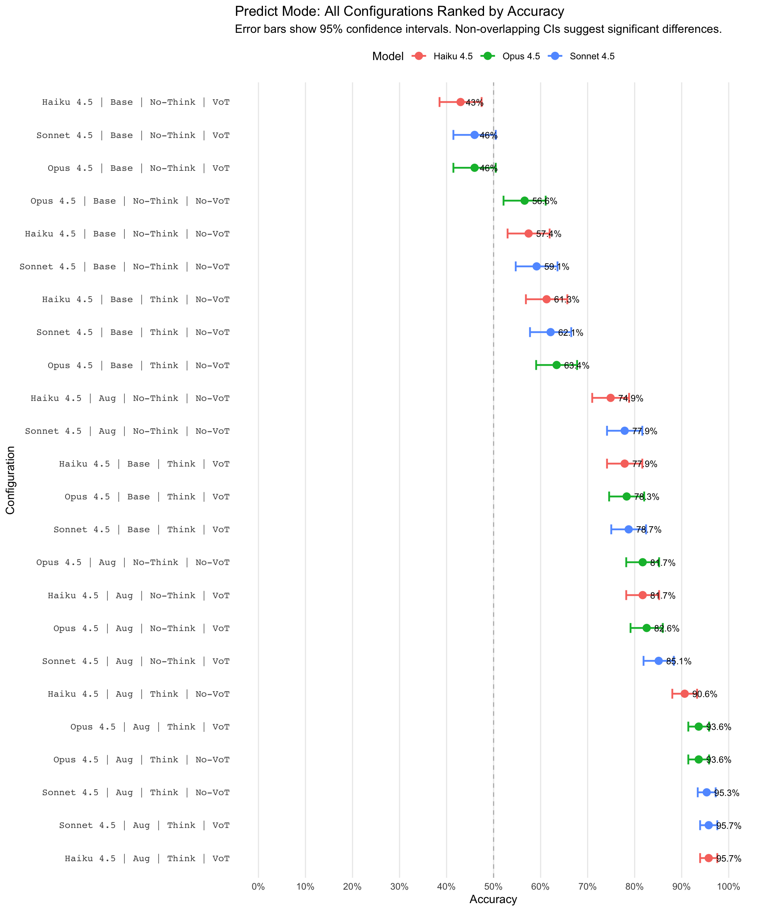
Code
# Print summary statistics
cat("\n=== Configuration Summary ===\n")
=== Configuration Summary ===Code
cat("Total configurations:", nrow(forest_data), "\n")Total configurations: 24 Code
cat("Best performing:", as.character(forest_data$config_label[1]), "\n")Best performing: Haiku 4.5 | Aug | Think | VoT Code
cat(" Accuracy:", round(forest_data$accuracy[1] * 100, 1), "%\n") Accuracy: 95.7 %Code
cat(" 95% CI: [", round(forest_data$ci_lower[1] * 100, 1), "%, ",
round(forest_data$ci_upper[1] * 100, 1), "%]\n", sep = "") 95% CI: [93.9%, 97.6%]Code
cat("\n=== Factor-Level Comparisons ===\n")
=== Factor-Level Comparisons ===Code
cat("Shows accuracy by individual factors, collapsing across other dimensions.\n\n")Shows accuracy by individual factors, collapsing across other dimensions.Code
# Calculate marginal effects for each factor
factor_data <- list(
Model = predict_data |>
group_by(model_name) |>
summarise(
n = n(),
accuracy = mean(correct),
ci_lower = accuracy - 1.96 * sqrt(accuracy * (1 - accuracy) / n),
ci_upper = accuracy + 1.96 * sqrt(accuracy * (1 - accuracy) / n)
) |>
mutate(factor = "Model", level = model_name),
Prompt = predict_data |>
group_by(prompt_style) |>
summarise(
n = n(),
accuracy = mean(correct),
ci_lower = accuracy - 1.96 * sqrt(accuracy * (1 - accuracy) / n),
ci_upper = accuracy + 1.96 * sqrt(accuracy * (1 - accuracy) / n)
) |>
mutate(factor = "Prompt", level = prompt_style),
Thinking = predict_data |>
group_by(enable_thinking) |>
summarise(
n = n(),
accuracy = mean(correct),
ci_lower = accuracy - 1.96 * sqrt(accuracy * (1 - accuracy) / n),
ci_upper = accuracy + 1.96 * sqrt(accuracy * (1 - accuracy) / n)
) |>
mutate(factor = "Extended Thinking", level = ifelse(enable_thinking, "Enabled", "Disabled")),
VoT = predict_data |>
group_by(vot_ray_trace) |>
summarise(
n = n(),
accuracy = mean(correct),
ci_lower = accuracy - 1.96 * sqrt(accuracy * (1 - accuracy) / n),
ci_upper = accuracy + 1.96 * sqrt(accuracy * (1 - accuracy) / n)
) |>
mutate(factor = "VoT Ray Trace", level = ifelse(vot_ray_trace, "Enabled", "Disabled"))
) |>
bind_rows() |>
mutate(factor = factor(factor, levels = c("Model", "Prompt", "Extended Thinking", "VoT Ray Trace")))
# Factor comparison plot
p_factors <- ggplot(factor_data, aes(x = accuracy, y = level)) +
geom_point(size = 4, color = "#2C3E50") +
geom_errorbarh(aes(xmin = ci_lower, xmax = ci_upper),
height = 0.2, linewidth = 1, color = "#2C3E50") +
geom_text(aes(label = paste0(round(accuracy * 100, 1), "%")),
hjust = -0.3, size = 3.5) +
facet_wrap(~factor, ncol = 1, scales = "free_y") +
labs(
title = "Main Effects: Accuracy by Individual Factors",
subtitle = "Marginal effects averaging across all other factors",
x = "Accuracy",
y = NULL
) +
scale_x_continuous(
limits = c(0, 1),
labels = scales::percent,
breaks = seq(0, 1, 0.1)
) +
theme_minimal(base_size = 12) +
theme(
strip.text = element_text(face = "bold", size = 12),
panel.grid.major.y = element_blank(),
panel.grid.minor = element_blank()
)
print(p_factors)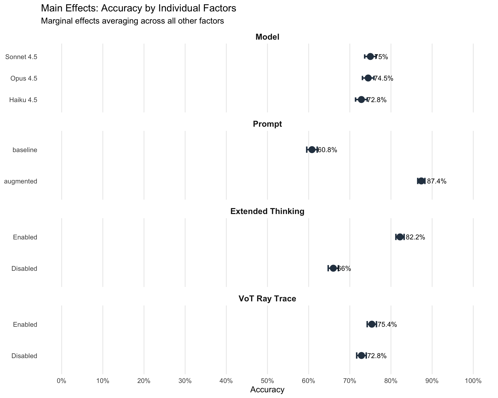
Code
# Accuracy by configuration to assess difficulty variation
predict_by_config <- predict_data |>
group_by(config_index, model_name) |>
summarise(
n = n(),
accuracy = mean(correct),
.groups = "drop"
) |>
pivot_wider(names_from = model_name, values_from = accuracy) |>
mutate(across(where(is.numeric) & !config_index, \(x) round(x, 3)))
kable(predict_by_config,
caption = "Prediction Accuracy by Configuration and Model")| config_index | n | Haiku 4.5 | Opus 4.5 | Sonnet 4.5 |
|---|---|---|---|---|
| 0 | 368 | 0.636 | 0.614 | 0.652 |
| 1 | 352 | 0.761 | 0.733 | 0.767 |
| 2 | 400 | 0.740 | 0.810 | 0.770 |
| 3 | 448 | 0.701 | 0.692 | 0.692 |
| 4 | 288 | 0.722 | 0.771 | 0.771 |
| 5 | 336 | 0.792 | 0.827 | 0.845 |
| 6 | 384 | 0.839 | 0.833 | 0.844 |
| 7 | 368 | 0.625 | 0.696 | 0.663 |
| 8 | 400 | 0.760 | 0.780 | 0.795 |
| 9 | 416 | 0.712 | 0.707 | 0.721 |
Code
# Convert factors for ANOVA
predict_data <- predict_data |>
mutate(
model_name = factor(model_name, levels = c("Haiku 4.5", "Sonnet 4.5", "Opus 4.5")),
prompt_style = factor(prompt_style, levels = c("baseline", "augmented")),
enable_thinking = factor(enable_thinking, levels = c(FALSE, TRUE)),
vot_ray_trace = factor(vot_ray_trace, levels = c(FALSE, TRUE)),
config_index = factor(config_index),
# Create unique ray identifier (nested within config)
ray_id = paste(toupper(ray_entry$side), ray_entry$pos, sep = "_")
)
# Check which factors have variation
cat("=== Factor Levels in Data ===\n")=== Factor Levels in Data ===Code
cat("Model:", paste(levels(droplevels(predict_data$model_name)), collapse = ", "), "\n")Model: Haiku 4.5, Sonnet 4.5, Opus 4.5 Code
cat("Prompt Style:", paste(levels(droplevels(predict_data$prompt_style)), collapse = ", "), "\n")Prompt Style: baseline, augmented Code
cat("Extended Thinking:", paste(levels(droplevels(predict_data$enable_thinking)), collapse = ", "), "\n")Extended Thinking: FALSE, TRUE Code
cat("VoT Ray Trace:", paste(levels(droplevels(predict_data$vot_ray_trace)), collapse = ", "), "\n\n")VoT Ray Trace: FALSE, TRUE Code
# Build model formula dynamically based on available factor levels
has_model_var <- length(unique(predict_data$model_name)) > 1
has_prompt_var <- length(unique(predict_data$prompt_style)) > 1
has_thinking_var <- length(unique(predict_data$enable_thinking)) > 1
has_vot_var <- length(unique(predict_data$vot_ray_trace)) > 1
# Build formula components
formula_parts <- c()
if (has_model_var) formula_parts <- c(formula_parts, "model_name")
if (has_prompt_var) formula_parts <- c(formula_parts, "prompt_style")
if (has_thinking_var) formula_parts <- c(formula_parts, "enable_thinking")
# Add interactions only if all three main effects are present
if (has_model_var && has_prompt_var && has_thinking_var) {
main_formula <- "model_name * prompt_style * enable_thinking"
} else {
main_formula <- paste(formula_parts, collapse = " + ")
}
# Add VoT if it varies
if (has_vot_var) {
full_formula <- paste0("correct ~ ", main_formula, " + vot_ray_trace + cells_traveled + atoms_affecting + (1 | config_index/ray_id)")
} else {
full_formula <- paste0("correct ~ ", main_formula, " + cells_traveled + atoms_affecting + (1 | config_index/ray_id)")
}
# ANOVA: Prediction accuracy (Mixed-Effects Logistic Regression)
cat("=== ANOVA: Prediction Accuracy (Mixed-Effects Logistic Regression) ===\n")=== ANOVA: Prediction Accuracy (Mixed-Effects Logistic Regression) ===Code
cat("Note: This tests whether factors significantly affect prediction accuracy.\n")Note: This tests whether factors significantly affect prediction accuracy.Code
cat("Covariates: cells_traveled (path length), atoms_affecting (atom density)\n")Covariates: cells_traveled (path length), atoms_affecting (atom density)Code
cat("Random effects: config_index (configuration), ray_id nested within config (individual rays)\n")Random effects: config_index (configuration), ray_id nested within config (individual rays)Code
cat("Formula:", full_formula, "\n\n")Formula: correct ~ model_name * prompt_style * enable_thinking + vot_ray_trace + cells_traveled + atoms_affecting + (1 | config_index/ray_id) Code
model_predict <- glmer(as.formula(full_formula),
family = binomial(link = "logit"),
data = predict_data,
control = glmerControl(optimizer = "bobyqa"))
print(Anova(model_predict, type = 3))Analysis of Deviance Table (Type III Wald chisquare tests)
Response: correct
Chisq Df Pr(>Chisq)
(Intercept) 39.9101 1 2.659e-10 ***
model_name 1.1597 2 0.5599818
prompt_style 73.8679 1 < 2.2e-16 ***
enable_thinking 86.0499 1 < 2.2e-16 ***
vot_ray_trace 14.2558 1 0.0001596 ***
cells_traveled 381.1024 1 < 2.2e-16 ***
atoms_affecting 140.1087 1 < 2.2e-16 ***
model_name:prompt_style 2.5874 2 0.2742513
model_name:enable_thinking 0.4069 2 0.8158956
prompt_style:enable_thinking 5.2810 1 0.0215594 *
model_name:prompt_style:enable_thinking 1.4111 2 0.4938409
---
Signif. codes: 0 '***' 0.001 '**' 0.01 '*' 0.05 '.' 0.1 ' ' 1Code
# Effect sizes: Odds ratios with 95% CI
cat("\n=== Odds Ratios with 95% Confidence Intervals ===\n")
=== Odds Ratios with 95% Confidence Intervals ===Code
cat("OR > 1: Factor increases odds of correct prediction\n")OR > 1: Factor increases odds of correct predictionCode
cat("OR < 1: Factor decreases odds of correct prediction\n")OR < 1: Factor decreases odds of correct predictionCode
cat("Note: These are conditional ORs (given random effects)\n\n")Note: These are conditional ORs (given random effects)Code
# Get odds ratios with confidence intervals and p-values
fixed_coefs <- fixef(model_predict)
conf_int <- confint(model_predict, parm = "beta_", method = "Wald", quiet = TRUE)
# Extract p-values using tidy() from broom.mixed
tidy_results <- tidy(model_predict, effects = "fixed") |>
select(term, p.value)
# Create odds ratios table
or_results <- exp(cbind(OR = fixed_coefs, conf_int))
or_df <- as.data.frame(or_results) |>
rownames_to_column("Term") |>
filter(!grepl("Intercept", Term)) |>
left_join(tidy_results, by = c("Term" = "term")) |>
mutate(
# Round numeric values
across(c(OR, `2.5 %`, `97.5 %`), ~round(., 3)),
p.value = round(p.value, 4),
# Determine significance
significant = p.value < 0.05
)
# Format for display
or_df_display <- or_df |>
mutate(
`Odds Ratio` = OR,
`95% CI Lower` = `2.5 %`,
`95% CI Upper` = `97.5 %`,
`p-value` = format.pval(p.value, digits = 3, eps = 0.001)
) |>
select(Term, `Odds Ratio`, `95% CI Lower`, `95% CI Upper`, `p-value`, significant)
# Create base table
table_out <- kable(or_df_display |> select(-significant),
caption = "Odds Ratios for Prediction Accuracy (Fixed Effects)",
format = "html") |>
kable_styling(bootstrap_options = c("striped", "hover"))
# Apply bold formatting to significant rows
sig_rows <- which(or_df_display$significant)
if (length(sig_rows) > 0) {
for (row_idx in sig_rows) {
table_out <- table_out |>
row_spec(row_idx, bold = TRUE)
}
}
# Add footnote
table_out <- table_out |>
footnote(general = "Significant results (p < 0.05) are shown in bold.")
table_out| Term | Odds Ratio | 95% CI Lower | 95% CI Upper | p-value |
|---|---|---|---|---|
| model_nameSonnet 4.5 | 1.123 | 0.909 | 1.386 | 0.2815 |
| model_nameOpus 4.5 | 1.059 | 0.858 | 1.308 | 0.5907 |
| prompt_styleaugmented | 2.680 | 2.140 | 3.355 | <0.001 |
| enable_thinkingTRUE | 2.932 | 2.336 | 3.680 | <0.001 |
| vot_ray_traceTRUE | 1.223 | 1.102 | 1.358 | <0.001 |
| cells_traveled | 0.816 | 0.800 | 0.833 | <0.001 |
| atoms_affecting | 0.616 | 0.569 | 0.668 | <0.001 |
| model_nameSonnet 4.5:prompt_styleaugmented | 1.200 | 0.868 | 1.659 | 0.2699 |
| model_nameOpus 4.5:prompt_styleaugmented | 1.294 | 0.935 | 1.789 | 0.1197 |
| model_nameSonnet 4.5:enable_thinkingTRUE | 0.948 | 0.686 | 1.308 | 0.7431 |
| model_nameOpus 4.5:enable_thinkingTRUE | 1.053 | 0.762 | 1.455 | 0.7531 |
| prompt_styleaugmented:enable_thinkingTRUE | 1.576 | 1.069 | 2.324 | 0.0216 |
| model_nameSonnet 4.5:prompt_styleaugmented:enable_thinkingTRUE | 1.214 | 0.680 | 2.167 | 0.5121 |
| model_nameOpus 4.5:prompt_styleaugmented:enable_thinkingTRUE | 0.846 | 0.481 | 1.489 | 0.5627 |
| Note: | ||||
| Significant results (p < 0.05) are shown in bold. |
Code
# Random effects variance
cat("\n=== Random Effects ===\n")
=== Random Effects ===Code
cat("Variance components for nested random effects:\n")Variance components for nested random effects:Code
cat("- config_index: Configuration-level variance (atom placement difficulty)\n")- config_index: Configuration-level variance (atom placement difficulty)Code
cat("- ray_id:config_index: Ray-within-config variance (individual ray difficulty)\n\n")- ray_id:config_index: Ray-within-config variance (individual ray difficulty)Code
print(VarCorr(model_predict)) Groups Name Std.Dev.
ray_id:config_index (Intercept) 0.64862
config_index (Intercept) 0.83955 Code
cat("\nIntraclass Correlation Coefficient (ICC):\n")
Intraclass Correlation Coefficient (ICC):Code
cat("Proportion of variance due to clustering at both levels\n")Proportion of variance due to clustering at both levelsCode
cat("- ICC accounts for both configuration and ray-within-config clustering\n\n")- ICC accounts for both configuration and ray-within-config clusteringCode
icc_value <- performance::icc(model_predict)
print(icc_value)# Intraclass Correlation Coefficient
Adjusted ICC: 0.255
Unadjusted ICC: 0.197Code
# Pseudo R² (Nakagawa for mixed models)
cat("\n=== Model Fit: Pseudo R² (Nakagawa & Schielzeth) ===\n")
=== Model Fit: Pseudo R² (Nakagawa & Schielzeth) ===Code
cat("Marginal R²: Variance explained by fixed effects only\n")Marginal R²: Variance explained by fixed effects onlyCode
cat("Conditional R²: Variance explained by fixed + random effects\n\n")Conditional R²: Variance explained by fixed + random effectsCode
r2_result <- performance::r2_nakagawa(model_predict)
print(r2_result)# R2 for Mixed Models
Conditional R2: 0.424
Marginal R2: 0.227Code
# Cramér's V for categorical associations
cat("\n=== Cramér's V (Effect Size for Categorical Associations) ===\n")
=== Cramér's V (Effect Size for Categorical Associations) ===Code
cat("Interpretation: 0.10=small, 0.30=medium, 0.50=large\n\n")Interpretation: 0.10=small, 0.30=medium, 0.50=largeCode
cramers_results <- tibble(Factor = character(), `Cramér's V` = numeric())
if (has_model_var) {
cramers_v_model <- cramers_v(table(predict_data$model_name, predict_data$correct))
cramers_results <- cramers_results |> add_row(Factor = "Model", `Cramér's V` = cramers_v_model$Cramers_v)
}
if (has_prompt_var) {
cramers_v_prompt <- cramers_v(table(predict_data$prompt_style, predict_data$correct))
cramers_results <- cramers_results |> add_row(Factor = "Prompt Style", `Cramér's V` = cramers_v_prompt$Cramers_v)
}
if (has_thinking_var) {
cramers_v_thinking <- cramers_v(table(predict_data$enable_thinking, predict_data$correct))
cramers_results <- cramers_results |> add_row(Factor = "Extended Thinking", `Cramér's V` = cramers_v_thinking$Cramers_v)
}
if (has_vot_var) {
cramers_v_vot <- cramers_v(table(predict_data$vot_ray_trace, predict_data$correct))
cramers_results <- cramers_results |> add_row(Factor = "VoT Ray Trace", `Cramér's V` = cramers_v_vot$Cramers_v)
}
cramers_results <- cramers_results |> mutate(`Cramér's V` = round(`Cramér's V`, 3))
if (nrow(cramers_results) > 0) {
kable(cramers_results, caption = "Association Strength with Prediction Accuracy")
}| Factor | Cramér’s V |
|---|---|
| Model | 0.016 |
| Prompt Style | 0.303 |
| Extended Thinking | 0.185 |
| VoT Ray Trace | 0.027 |
Code
# Regression coefficients interpretation
cat("\n=== Regression Interpretation ===\n")
=== Regression Interpretation ===Code
cat("Key findings from mixed-effects logistic regression:\n")Key findings from mixed-effects logistic regression:Code
cat("Note: Coefficients are for fixed effects only\n\n")Note: Coefficients are for fixed effects onlyCode
# Get tidy output for main effects (fixed effects only)
tidy_results <- tidy(model_predict, effects = "fixed", conf.int = TRUE) |>
filter(!grepl("Intercept|:", term)) |> # Main effects only (no interactions)
mutate(
OR = exp(estimate),
OR_lower = exp(conf.low),
OR_upper = exp(conf.high)
) |>
select(term, estimate, OR, OR_lower, OR_upper, p.value) |>
mutate(across(c(estimate, OR, OR_lower, OR_upper), ~round(., 3)),
p.value = format.pval(p.value, digits = 3, eps = 0.001))
kable(tidy_results,
col.names = c("Term", "β (log-odds)", "OR", "OR 95% CI Lower", "OR 95% CI Upper", "p-value"),
caption = "Regression Coefficients for Main Effects (Fixed Effects)")| Term | β (log-odds) | OR | OR 95% CI Lower | OR 95% CI Upper | p-value |
|---|---|---|---|---|---|
| model_nameSonnet 4.5 | 0.116 | 1.123 | 0.909 | 1.386 | 0.282 |
| model_nameOpus 4.5 | 0.058 | 1.059 | 0.858 | 1.308 | 0.591 |
| prompt_styleaugmented | 0.986 | 2.680 | 2.140 | 3.355 | <0.001 |
| enable_thinkingTRUE | 1.076 | 2.932 | 2.336 | 3.680 | <0.001 |
| vot_ray_traceTRUE | 0.201 | 1.223 | 1.102 | 1.358 | <0.001 |
| cells_traveled | -0.203 | 0.816 | 0.800 | 0.833 | <0.001 |
| atoms_affecting | -0.484 | 0.616 | 0.569 | 0.668 | <0.001 |
Code
# Interpretation section
cat("\n=== Interpretation: Why Nested Random Effects? ===\n")
=== Interpretation: Why Nested Random Effects? ===Code
cat("Two-level random effects structure (rays nested within configurations):\n\n")Two-level random effects structure (rays nested within configurations):Code
cat("Configuration-level random effects (config_index):\n")Configuration-level random effects (config_index):Code
cat("1. Accounts for overall difficulty due to specific atom placements\n")1. Accounts for overall difficulty due to specific atom placementsCode
cat("2. Generalizes inference beyond these 10 configurations\n")2. Generalizes inference beyond these 10 configurationsCode
cat("3. Captures configuration-specific effects (e.g., dense vs sparse atom patterns)\n\n")3. Captures configuration-specific effects (e.g., dense vs sparse atom patterns)Code
cat("Ray-level random effects (ray_id:config_index):\n")Ray-level random effects (ray_id:config_index):Code
cat("1. Accounts for individual ray difficulty within each configuration\n")1. Accounts for individual ray difficulty within each configurationCode
cat("2. Handles correlation: Same ray tested across multiple conditions\n")2. Handles correlation: Same ray tested across multiple conditionsCode
cat("3. Allows each ray to have its own baseline difficulty\n")3. Allows each ray to have its own baseline difficultyCode
cat("4. Essential when same rays appear in multiple experimental conditions\n\n")4. Essential when same rays appear in multiple experimental conditionsCode
cat("Why nested? ray_id 'NORTH_3' represents different physical rays across configs\n")Why nested? ray_id 'NORTH_3' represents different physical rays across configsCode
cat("(different atom placements). Must be nested, not crossed.\n\n")(different atom placements). Must be nested, not crossed.Code
cat("Covariates (cells_traveled, atoms_affecting):\n")Covariates (cells_traveled, atoms_affecting):Code
cat("- NOT confounders: Same rays tested across all experimental conditions\n")- NOT confounders: Same rays tested across all experimental conditionsCode
cat("- ARE precision variables: Explain variance, improve power\n")- ARE precision variables: Explain variance, improve powerCode
cat("- Do NOT reduce bias: Only improve efficiency of estimates\n\n")- Do NOT reduce bias: Only improve efficiency of estimatesCode
cat("Impact of ignoring ray-level clustering:\n")Impact of ignoring ray-level clustering:Code
cat("- Underestimates standard errors (treats correlated obs as independent)\n")- Underestimates standard errors (treats correlated obs as independent)Code
cat("- Inflates Type I error (false positives)\n")- Inflates Type I error (false positives)Code
cat("- Violates independence assumption of logistic regression\n\n")- Violates independence assumption of logistic regressionCode
# Test for effect modification by cells_traveled (path complexity)
cat("=== Effect Modification: Does path complexity moderate treatment effects? ===\n")=== Effect Modification: Does path complexity moderate treatment effects? ===Code
cat("Path complexity measured as total cells traveled (entry + internal + exit).\n\n")Path complexity measured as total cells traveled (entry + internal + exit).Code
# Only run if we have variation in factors and valid cells_traveled data
if (has_model_var || has_prompt_var || has_thinking_var) {
# Build interaction formula
interaction_parts <- c()
if (has_model_var) interaction_parts <- c(interaction_parts, "model_name * cells_traveled")
if (has_prompt_var) interaction_parts <- c(interaction_parts, "prompt_style * cells_traveled")
if (has_thinking_var) interaction_parts <- c(interaction_parts, "enable_thinking * cells_traveled")
# Add nested random effects
pred_mod_formula <- paste0("correct ~ ", paste(interaction_parts, collapse = " + "), " + (1 | config_index/ray_id)")
cat("--- Prediction Accuracy with Path Complexity Interaction ---\n")
cat("Formula:", pred_mod_formula, "\n")
cat("Note: Mixed-effects logistic regression tests whether treatment effects vary with ray path length.\n\n")
model_predict_mod <- glmer(as.formula(pred_mod_formula),
family = binomial(link = "logit"),
data = predict_data,
control = glmerControl(optimizer = "bobyqa"))
# ANOVA table
print(Anova(model_predict_mod, type = 3))
# Interpretation of interactions
cat("\n=== Interpretation of Interactions ===\n")
cat("Significant interactions indicate that treatment effects depend on path complexity.\n")
cat("- No interaction: Treatment effect is constant across simple and complex paths\n")
cat("- Positive interaction: Treatment effect increases with path complexity\n")
cat("- Negative interaction: Treatment effect decreases with path complexity\n\n")
# Extract interaction coefficients
interaction_coefs <- tidy(model_predict_mod, conf.int = TRUE) |>
filter(grepl(":", term)) |> # Interaction terms only
filter(grepl("cells_traveled", term)) |>
mutate(
OR = exp(estimate),
OR_lower = exp(conf.low),
OR_upper = exp(conf.high)
) |>
select(term, estimate, OR, OR_lower, OR_upper, p.value) |>
mutate(across(c(estimate, OR, OR_lower, OR_upper), ~round(., 3)),
p.value = format.pval(p.value, digits = 3, eps = 0.001))
if (nrow(interaction_coefs) > 0) {
kable(interaction_coefs,
col.names = c("Interaction Term", "β (log-odds)", "OR", "OR 95% CI Lower", "OR 95% CI Upper", "p-value"),
caption = "Path Complexity Interaction Effects")
}
# Simple slopes analysis for significant interactions
cat("\n=== Path Complexity Distribution ===\n")
cells_summary <- predict_data |>
summarise(
min_cells = min(cells_traveled, na.rm = TRUE),
q25_cells = quantile(cells_traveled, 0.25, na.rm = TRUE),
median_cells = median(cells_traveled, na.rm = TRUE),
q75_cells = quantile(cells_traveled, 0.75, na.rm = TRUE),
max_cells = max(cells_traveled, na.rm = TRUE),
mean_cells = mean(cells_traveled, na.rm = TRUE),
sd_cells = sd(cells_traveled, na.rm = TRUE)
) |>
mutate(across(everything(), ~round(., 2)))
print(cells_summary)
} else {
cat("Insufficient factor variation for effect modification analysis.\n")
}--- Prediction Accuracy with Path Complexity Interaction ---
Formula: correct ~ model_name * cells_traveled + prompt_style * cells_traveled + enable_thinking * cells_traveled + (1 | config_index/ray_id)
Note: Mixed-effects logistic regression tests whether treatment effects vary with ray path length.Analysis of Deviance Table (Type III Wald chisquare tests)
Response: correct
Chisq Df Pr(>Chisq)
(Intercept) 24.8907 1 6.068e-07 ***
model_name 2.6703 2 0.263120
cells_traveled 147.0175 1 < 2.2e-16 ***
prompt_style 32.4483 1 1.224e-08 ***
enable_thinking 6.6848 1 0.009724 **
model_name:cells_traveled 0.4922 2 0.781839
cells_traveled:prompt_style 8.2773 1 0.004014 **
cells_traveled:enable_thinking 34.4661 1 4.337e-09 ***
---
Signif. codes: 0 '***' 0.001 '**' 0.01 '*' 0.05 '.' 0.1 ' ' 1
=== Interpretation of Interactions ===
Significant interactions indicate that treatment effects depend on path complexity.
- No interaction: Treatment effect is constant across simple and complex paths
- Positive interaction: Treatment effect increases with path complexity
- Negative interaction: Treatment effect decreases with path complexity
=== Path Complexity Distribution ===
# A tibble: 1 × 7
min_cells q25_cells median_cells q75_cells max_cells mean_cells sd_cells
<dbl> <dbl> <dbl> <dbl> <dbl> <dbl> <dbl>
1 2 4 6 9 13 6.49 2.9Code
# Test for effect modification by atoms_affecting (atom density)
cat("\n=== Effect Modification: Does atom density moderate treatment effects? ===\n")
=== Effect Modification: Does atom density moderate treatment effects? ===Code
cat("Atom density measured as number of atoms adjacent to ray path.\n\n")Atom density measured as number of atoms adjacent to ray path.Code
# Only run if we have variation in factors
if (has_model_var || has_prompt_var || has_thinking_var) {
# Build interaction formula
interaction_parts <- c()
if (has_model_var) interaction_parts <- c(interaction_parts, "model_name * atoms_affecting")
if (has_prompt_var) interaction_parts <- c(interaction_parts, "prompt_style * atoms_affecting")
if (has_thinking_var) interaction_parts <- c(interaction_parts, "enable_thinking * atoms_affecting")
# Add nested random effects
pred_mod_formula_atoms <- paste0("correct ~ ", paste(interaction_parts, collapse = " + "), " + (1 | config_index/ray_id)")
cat("--- Prediction Accuracy with Atom Density Interaction ---\n")
cat("Formula:", pred_mod_formula_atoms, "\n")
cat("Note: Mixed-effects logistic regression tests whether treatment effects vary with atom density.\n\n")
model_predict_mod_atoms <- glmer(as.formula(pred_mod_formula_atoms),
family = binomial(link = "logit"),
data = predict_data,
control = glmerControl(optimizer = "bobyqa"))
# ANOVA table
print(Anova(model_predict_mod_atoms, type = 3))
# Interpretation of interactions
cat("\n=== Interpretation of Interactions ===\n")
cat("Significant interactions indicate that treatment effects depend on atom density.\n")
cat("- No interaction: Treatment effect is constant across low and high atom density\n")
cat("- Positive interaction: Treatment effect increases with more atoms affecting path\n")
cat("- Negative interaction: Treatment effect decreases with more atoms affecting path\n\n")
# Extract interaction coefficients
interaction_coefs_atoms <- tidy(model_predict_mod_atoms, conf.int = TRUE) |>
filter(grepl(":", term)) |> # Interaction terms only
filter(grepl("atoms_affecting", term)) |>
mutate(
OR = exp(estimate),
OR_lower = exp(conf.low),
OR_upper = exp(conf.high)
) |>
select(term, estimate, OR, OR_lower, OR_upper, p.value) |>
mutate(across(c(estimate, OR, OR_lower, OR_upper), ~round(., 3)),
p.value = format.pval(p.value, digits = 3, eps = 0.001))
if (nrow(interaction_coefs_atoms) > 0) {
kable(interaction_coefs_atoms,
col.names = c("Interaction Term", "β (log-odds)", "OR", "OR 95% CI Lower", "OR 95% CI Upper", "p-value"),
caption = "Atom Density Interaction Effects")
}
# Summary statistics for atoms_affecting
cat("\n=== Atom Density Distribution ===\n")
atoms_summary <- predict_data |>
summarise(
min_atoms = min(atoms_affecting, na.rm = TRUE),
q25_atoms = quantile(atoms_affecting, 0.25, na.rm = TRUE),
median_atoms = median(atoms_affecting, na.rm = TRUE),
q75_atoms = quantile(atoms_affecting, 0.75, na.rm = TRUE),
max_atoms = max(atoms_affecting, na.rm = TRUE),
mean_atoms = mean(atoms_affecting, na.rm = TRUE),
sd_atoms = sd(atoms_affecting, na.rm = TRUE)
) |>
mutate(across(everything(), ~round(., 2)))
print(atoms_summary)
} else {
cat("Insufficient factor variation for effect modification analysis.\n")
}--- Prediction Accuracy with Atom Density Interaction ---
Formula: correct ~ model_name * atoms_affecting + prompt_style * atoms_affecting + enable_thinking * atoms_affecting + (1 | config_index/ray_id)
Note: Mixed-effects logistic regression tests whether treatment effects vary with atom density.
Analysis of Deviance Table (Type III Wald chisquare tests)
Response: correct
Chisq Df Pr(>Chisq)
(Intercept) 1.8883 1 0.16939
model_name 0.3114 2 0.85582
atoms_affecting 4.6401 1 0.03123 *
prompt_style 710.2122 1 < 2.2e-16 ***
enable_thinking 45.9063 1 1.240e-11 ***
model_name:atoms_affecting 1.7506 2 0.41673
atoms_affecting:prompt_style 154.0699 1 < 2.2e-16 ***
atoms_affecting:enable_thinking 37.5996 1 8.686e-10 ***
---
Signif. codes: 0 '***' 0.001 '**' 0.01 '*' 0.05 '.' 0.1 ' ' 1
=== Interpretation of Interactions ===
Significant interactions indicate that treatment effects depend on atom density.
- No interaction: Treatment effect is constant across low and high atom density
- Positive interaction: Treatment effect increases with more atoms affecting path
- Negative interaction: Treatment effect decreases with more atoms affecting path
=== Atom Density Distribution ===
# A tibble: 1 × 7
min_atoms q25_atoms median_atoms q75_atoms max_atoms mean_atoms sd_atoms
<dbl> <dbl> <dbl> <dbl> <dbl> <dbl> <dbl>
1 0 1 1 1 3 0.97 0.71Code
# Accuracy by model and condition
p1_pred <- predict_data |>
group_by(model_name, prompt_style, enable_thinking) |>
summarise(accuracy = mean(correct),
se = sqrt(accuracy * (1-accuracy) / n()),
.groups = "drop") |>
ggplot(aes(x = model_name, y = accuracy, fill = enable_thinking)) +
geom_col(position = position_dodge(0.8), width = 0.7) +
geom_errorbar(aes(ymin = accuracy - se, ymax = accuracy + se),
position = position_dodge(0.8), width = 0.2) +
facet_wrap(~prompt_style) +
labs(title = "Predict Mode: Accuracy by Model, Thinking, and Prompt Style",
x = "Model", y = "Accuracy", fill = "Extended\nThinking") +
scale_y_continuous(limits = c(0, 1), labels = scales::percent) +
theme(axis.text.x = element_text(angle = 45, hjust = 1))
print(p1_pred)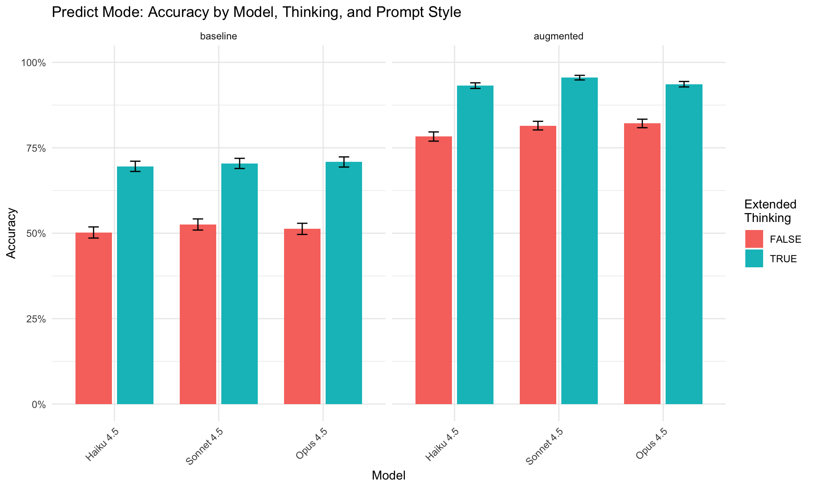
Code
# Accuracy by configuration (difficulty analysis)
p2_pred <- predict_data |>
group_by(config_index, model_name) |>
summarise(accuracy = mean(correct), .groups = "drop") |>
ggplot(aes(x = config_index, y = accuracy, color = model_name, group = model_name)) +
geom_line(linewidth = 1) +
geom_point(size = 2) +
labs(title = "Prediction Accuracy Across Configurations",
subtitle = "Variation indicates configuration difficulty differences",
x = "Configuration Index", y = "Accuracy", color = "Model") +
scale_y_continuous(limits = c(0, 1), labels = scales::percent) +
theme_minimal()
print(p2_pred)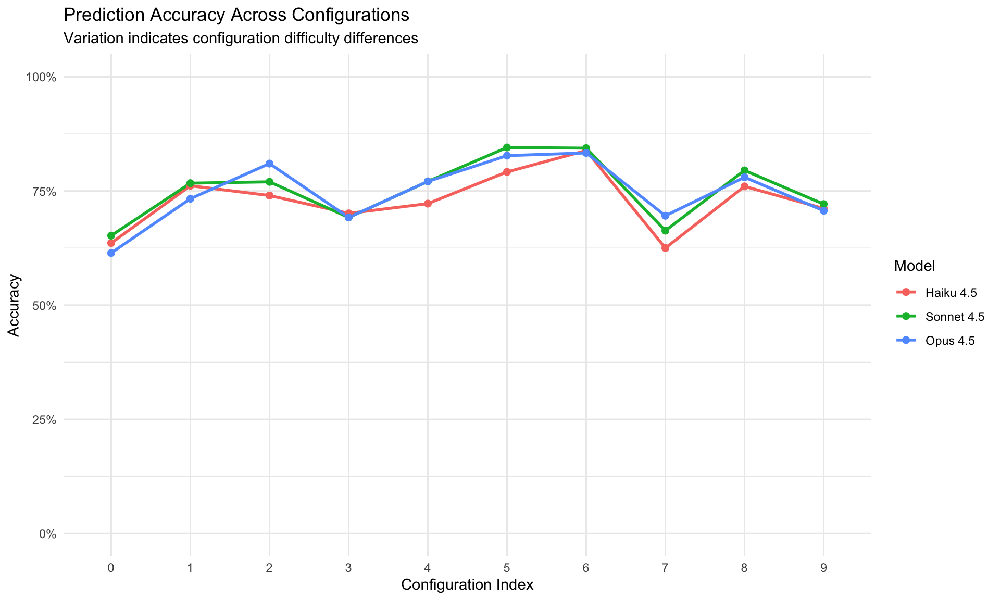
Code
# VoT Ray Trace effect
p3_pred <- predict_data |>
group_by(model_name, vot_ray_trace) |>
summarise(accuracy = mean(correct),
se = sqrt(accuracy * (1-accuracy) / n()),
.groups = "drop") |>
ggplot(aes(x = model_name, y = accuracy, fill = vot_ray_trace)) +
geom_col(position = position_dodge(0.8), width = 0.7) +
geom_errorbar(aes(ymin = accuracy - se, ymax = accuracy + se),
position = position_dodge(0.8), width = 0.2) +
labs(title = "Effect of VoT Ray Trace Visualization",
x = "Model", y = "Accuracy", fill = "VoT Ray\nTrace") +
scale_y_continuous(limits = c(0, 1), labels = scales::percent) +
theme(axis.text.x = element_text(angle = 45, hjust = 1))
print(p3_pred)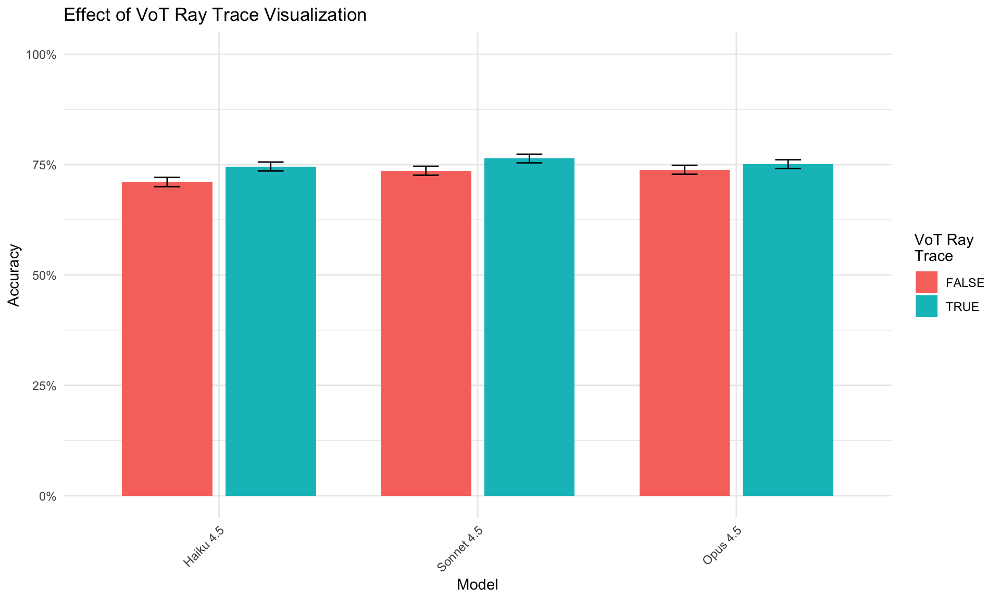
Code
# Path complexity vs accuracy
p4_pred <- predict_data |>
filter(!is.na(cells_traveled)) |>
group_by(cells_traveled, model_name) |>
summarise(accuracy = mean(correct),
n = n(),
.groups = "drop") |>
ggplot(aes(x = cells_traveled, y = accuracy, color = model_name)) +
geom_point(aes(size = n), alpha = 0.6) +
geom_smooth(method = "loess", se = TRUE, linewidth = 1) +
labs(title = "Performance vs Path Complexity",
subtitle = "Does accuracy decline as rays travel through more cells?",
x = "Cells Traveled (Entry + Internal + Exit)",
y = "Accuracy",
color = "Model",
size = "N") +
scale_y_continuous(limits = c(0, 1), labels = scales::percent) +
theme_minimal()
print(p4_pred)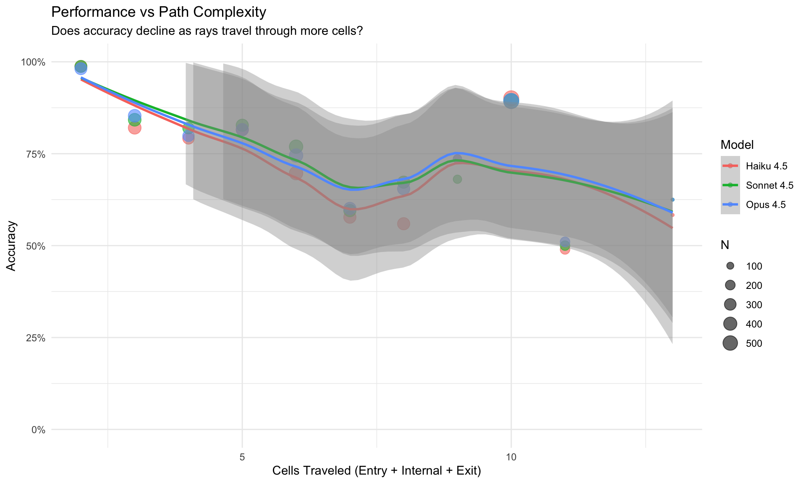
Code
cat("=== Ray Path Complexity Analysis ===\n\n")=== Ray Path Complexity Analysis ===Code
# 1. Correlation between complexity measures
complexity_cor <- cor(predict_data$cells_traveled, predict_data$atoms_affecting,
use = "complete.obs")
cat("Correlation between cells_traveled and atoms_affecting:", round(complexity_cor, 3), "\n\n")Correlation between cells_traveled and atoms_affecting: -0.213 Code
# 2. Scatterplot: cells_traveled vs atoms_affecting
p_complexity_scatter <- predict_data |>
filter(!is.na(cells_traveled) & !is.na(atoms_affecting)) |>
ggplot(aes(x = cells_traveled, y = atoms_affecting)) +
geom_jitter(aes(color = correct), alpha = 0.4, width = 0.2, height = 0.2) +
geom_smooth(method = "lm", se = TRUE, color = "black", linewidth = 1) +
labs(title = "Path Length vs Atom Density",
subtitle = paste0("Correlation: r = ", round(complexity_cor, 3)),
x = "Cells Traveled (Entry + Internal + Exit)",
y = "Atoms Affecting Path",
color = "Correct") +
scale_color_manual(values = c("TRUE" = "#00BA38", "FALSE" = "#F8766D")) +
theme_minimal()
print(p_complexity_scatter)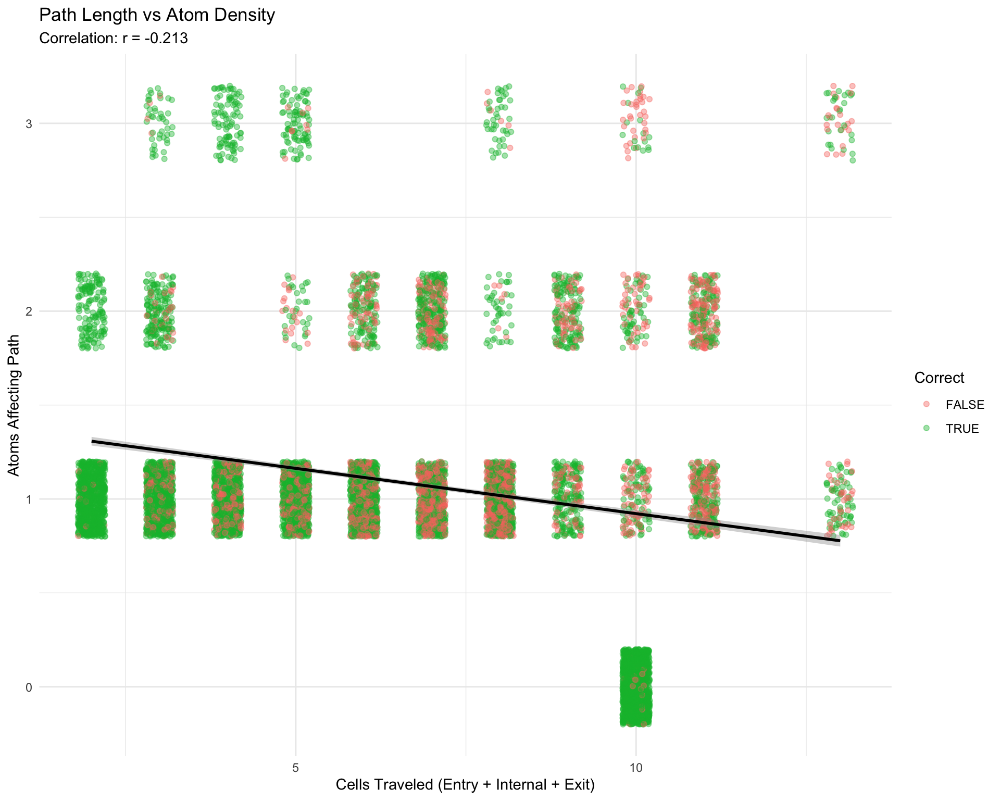
Code
# 3. Accuracy by atom density categories
p_atoms_accuracy <- predict_data |>
filter(!is.na(atoms_affecting)) |>
mutate(atom_category = factor(atoms_affecting,
levels = 0:4,
labels = c("0 atoms", "1 atom", "2 atoms", "3 atoms", "4 atoms"))) |>
group_by(atom_category, model_name) |>
summarise(
accuracy = mean(correct),
se = sqrt(accuracy * (1-accuracy) / n()),
n = n(),
.groups = "drop"
) |>
ggplot(aes(x = atom_category, y = accuracy, fill = model_name)) +
geom_col(position = position_dodge(0.8), width = 0.7) +
geom_errorbar(aes(ymin = accuracy - se, ymax = accuracy + se),
position = position_dodge(0.8), width = 0.2) +
geom_text(aes(label = paste0("n=", n)),
position = position_dodge(0.8), vjust = -0.5, size = 3) +
labs(title = "Accuracy by Atom Density",
subtitle = "How many atoms are adjacent to the ray path?",
x = "Number of Atoms Affecting Ray Path",
y = "Accuracy",
fill = "Model") +
scale_y_continuous(limits = c(0, 1.1), labels = scales::percent) +
theme_minimal() +
theme(axis.text.x = element_text(angle = 0))
print(p_atoms_accuracy)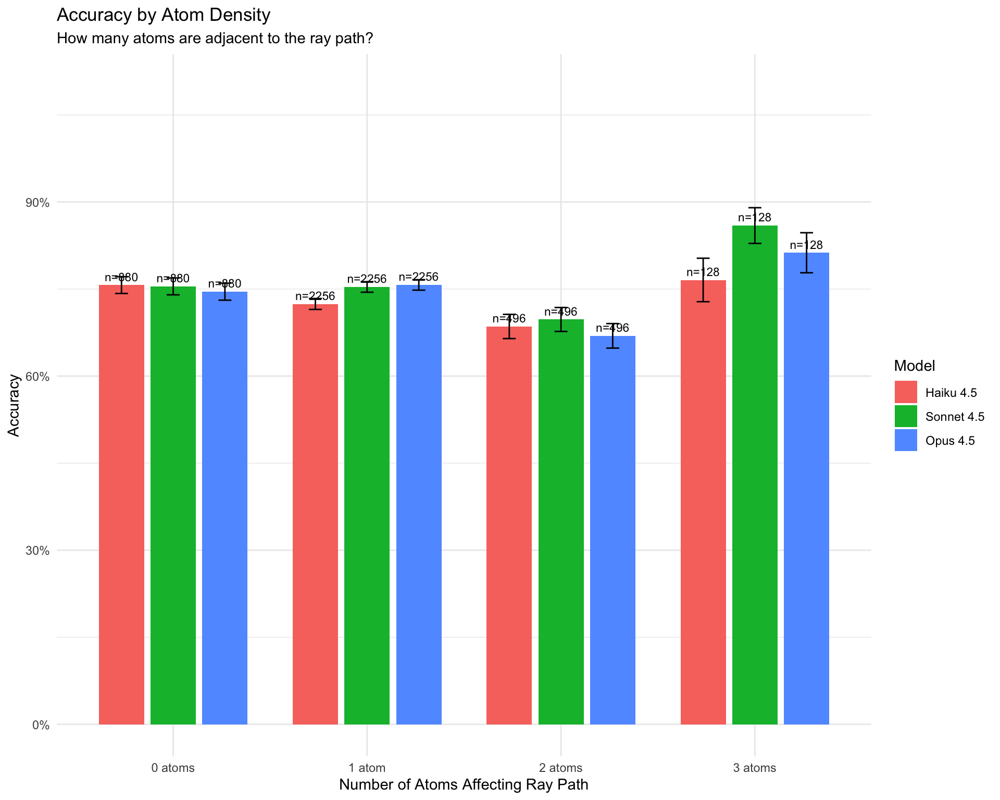
Code
# 4. Accuracy by path length quartiles
p_cells_quartiles <- predict_data |>
filter(!is.na(cells_traveled)) |>
mutate(
path_quartile = cut(cells_traveled,
breaks = quantile(cells_traveled, probs = c(0, 0.25, 0.5, 0.75, 1), na.rm = TRUE),
labels = c("Q1 (Shortest)", "Q2", "Q3", "Q4 (Longest)"),
include.lowest = TRUE)
) |>
group_by(path_quartile, model_name) |>
summarise(
accuracy = mean(correct),
se = sqrt(accuracy * (1-accuracy) / n()),
n = n(),
.groups = "drop"
) |>
ggplot(aes(x = path_quartile, y = accuracy, fill = model_name)) +
geom_col(position = position_dodge(0.8), width = 0.7) +
geom_errorbar(aes(ymin = accuracy - se, ymax = accuracy + se),
position = position_dodge(0.8), width = 0.2) +
geom_text(aes(label = paste0("n=", n)),
position = position_dodge(0.8), vjust = -0.5, size = 3) +
labs(title = "Accuracy by Path Length Quartiles",
subtitle = "Does accuracy decline for longer ray paths?",
x = "Path Length Quartile",
y = "Accuracy",
fill = "Model") +
scale_y_continuous(limits = c(0, 1.1), labels = scales::percent) +
theme_minimal() +
theme(axis.text.x = element_text(angle = 0))
print(p_cells_quartiles)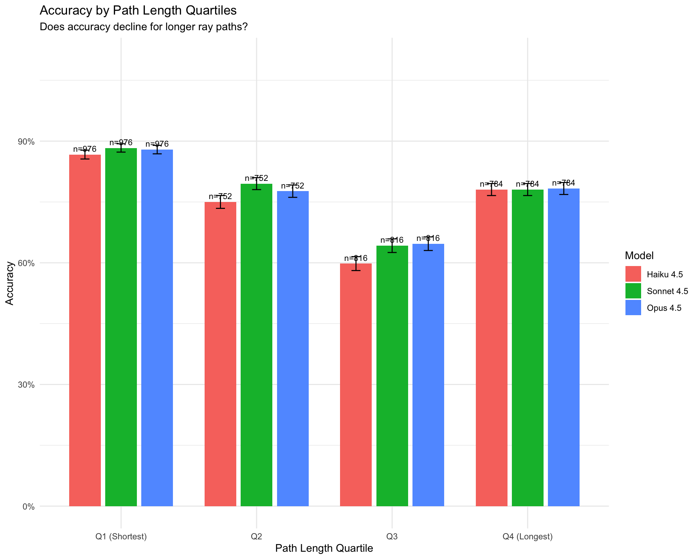
Code
# Analyze error patterns by comparing predicted vs actual
# This helps identify systematic errors (e.g., absorption vs deflection confusion)
# First, extract the type of result from predicted and actual
predict_errors <- predict_data |>
filter(!correct) |>
mutate(
predicted_type = case_when(
grepl("absorbed|HIT", predicted, ignore.case = TRUE) ~ "absorbed",
grepl("reflected|REFLECTION", predicted, ignore.case = TRUE) ~ "reflected",
TRUE ~ "detour"
),
actual_type = case_when(
grepl("absorbed|HIT", actual, ignore.case = TRUE) ~ "absorbed",
grepl("reflected|REFLECTION", actual, ignore.case = TRUE) ~ "reflected",
TRUE ~ "detour"
)
)
# Error confusion matrix
error_matrix <- predict_errors |>
count(actual_type, predicted_type) |>
pivot_wider(names_from = predicted_type, values_from = n, values_fill = 0)
cat("=== Error Confusion Matrix ===\n")=== Error Confusion Matrix ===Code
cat("Rows = Actual outcome, Columns = Predicted outcome\n\n")Rows = Actual outcome, Columns = Predicted outcomeCode
kable(error_matrix, caption = "Prediction Errors: Actual vs Predicted Outcome Type")| actual_type | detour | reflected | absorbed |
|---|---|---|---|
| absorbed | 596 | 30 | 0 |
| detour | 1238 | 22 | 280 |
| reflected | 524 | 0 | 232 |
Code
# Error rates by model
error_by_model <- predict_errors |>
count(model_name, actual_type, predicted_type) |>
group_by(model_name) |>
mutate(prop = n / sum(n)) |>
ungroup()
cat("\n=== Most Common Error Types by Model ===\n")
=== Most Common Error Types by Model ===Code
error_by_model |>
group_by(model_name) |>
slice_max(n, n = 3) |>
mutate(error_pattern = paste(actual_type, "->", predicted_type)) |>
select(model_name, error_pattern, n, prop) |>
mutate(prop = round(prop, 3)) |>
kable(col.names = c("Model", "Error Pattern (Actual -> Predicted)", "Count", "Proportion"))| Model | Error Pattern (Actual -> Predicted) | Count | Proportion |
|---|---|---|---|
| Haiku 4.5 | detour -> detour | 458 | 0.448 |
| Haiku 4.5 | absorbed -> detour | 214 | 0.209 |
| Haiku 4.5 | reflected -> detour | 178 | 0.174 |
| Sonnet 4.5 | detour -> detour | 406 | 0.432 |
| Sonnet 4.5 | absorbed -> detour | 180 | 0.191 |
| Sonnet 4.5 | reflected -> detour | 162 | 0.172 |
| Opus 4.5 | detour -> detour | 374 | 0.390 |
| Opus 4.5 | absorbed -> detour | 202 | 0.210 |
| Opus 4.5 | reflected -> detour | 184 | 0.192 |
4.2 Play Mode Results
Code
# Load all Play mode experiment JSON files from Experiment 1/Play/
play_json_files <- list.files(
path = "Experiment 1/Play",
pattern = "\\.json$",
full.names = TRUE
)
# Function to extract results from a single JSON file
extract_play_results <- function(json_file) {
data <- jsonlite::fromJSON(json_file, simplifyDataFrame = FALSE)
# Extract results array
results <- data$results
# Convert each result to a tibble row
map_dfr(results, function(r) {
# Calculate mean complexity measures for each ray fired
ray_complexity <- lapply(r$raySequence, function(ray) {
if (!is.null(ray$action) && ray$action == "fire" &&
!is.null(ray$rayResult) && !is.null(ray$rayResult$path)) {
list(
atoms = count_atoms_affecting(ray$rayResult$path, r$atomConfig),
cells = count_ray_cells(ray$rayResult)
)
} else {
list(atoms = NA_real_, cells = NA_real_)
}
})
mean_atoms <- mean(sapply(ray_complexity, function(x) x$atoms), na.rm = TRUE)
mean_cells <- mean(sapply(ray_complexity, function(x) x$cells), na.rm = TRUE)
if (is.nan(mean_atoms)) mean_atoms <- NA_real_
if (is.nan(mean_cells)) mean_cells <- NA_real_
tibble(
experiment_id = r$experimentId,
start_time = r$startTime,
end_time = r$endTime,
model = r$model,
model_name = r$modelName,
prompt_style = r$promptStyle,
prompt_condition = r$promptCondition,
mode = r$mode,
config_index = r$configIndex,
atom_config = list(r$atomConfig),
include_visualization = r$includeVisualization,
allow_hypotheses = r$allowHypotheses,
enable_thinking = r$enableThinking,
thinking_budget = r$thinkingBudget,
vot_grid_state = r$votGridState,
vot_ray_trace = r$votRayTrace,
vot_hypothesis = r$votHypothesis,
rays_used = r$raysUsed,
atoms_correct = r$atomsCorrect,
atoms_missed = r$atomsMissed,
score = r$score,
invalid_moves = r$invalidMoves,
hypothesis_actions = r$hypothesisActions,
total_api_calls = r$totalApiCalls,
total_input_tokens = r$totalInputTokens,
total_output_tokens = r$totalOutputTokens,
total_response_time_ms = r$totalResponseTimeMs,
mean_atoms_per_ray = mean_atoms,
mean_cells_per_ray = mean_cells,
source_file = basename(json_file)
)
})
}
# Load all results into a single long-format tibble
play_data <- map_dfr(play_json_files, extract_play_results)
# Display summary of loaded data
cat("Loaded", nrow(play_data), "experiment results from",
length(play_json_files), "JSON files\n")Loaded 480 experiment results from 16 JSON filesCode
cat("Models:", paste(unique(play_data$model_name), collapse = ", "), "\n")Models: Haiku 4.5, Sonnet 4.5, Opus 4.5 Code
cat("Prompt styles:", paste(unique(play_data$prompt_style), collapse = ", "), "\n")Prompt styles: augmented, baseline Code
cat("Configurations tested:", length(unique(play_data$config_index)), "\n")Configurations tested: 10 Code
cat("Mean atoms per ray range:",
round(min(play_data$mean_atoms_per_ray, na.rm = TRUE), 2), "-",
round(max(play_data$mean_atoms_per_ray, na.rm = TRUE), 2), "\n")Mean atoms per ray range: 0 - 2 Code
cat("Mean cells per ray range:",
round(min(play_data$mean_cells_per_ray, na.rm = TRUE), 2), "-",
round(max(play_data$mean_cells_per_ray, na.rm = TRUE), 2), "\n")Mean cells per ray range: 2 - 10 Code
# Summary statistics by model, prompt, and thinking
play_summary <- play_data |>
group_by(model_name, prompt_style, enable_thinking) |>
summarise(
n = n(),
atoms_correct_mean = mean(atoms_correct),
atoms_correct_sd = sd(atoms_correct),
score_mean = mean(score),
score_sd = sd(score),
mean_atoms_ray = mean(mean_atoms_per_ray, na.rm = TRUE),
rays_used_mean = mean(rays_used),
.groups = "drop"
) |>
mutate(across(where(is.numeric) & !n, \(x) round(x, 2)))
kable(play_summary,
col.names = c("Model", "Prompt", "Thinking", "N",
"Atoms Correct (M)", "Atoms Correct (SD)",
"Score (M)", "Score (SD)",
"Atoms/Ray", "Rays Used"))| Model | Prompt | Thinking | N | Atoms Correct (M) | Atoms Correct (SD) | Score (M) | Score (SD) | Atoms/Ray | Rays Used |
|---|---|---|---|---|---|---|---|---|---|
| Haiku 4.5 | augmented | FALSE | 40 | 0.88 | 1.20 | 31.52 | 8.20 | 1.02 | 11.03 |
| Haiku 4.5 | augmented | TRUE | 40 | 1.77 | 1.44 | 26.40 | 10.17 | 0.97 | 10.95 |
| Haiku 4.5 | baseline | FALSE | 40 | 0.82 | 1.32 | 26.80 | 6.72 | 1.12 | 7.90 |
| Haiku 4.5 | baseline | TRUE | 40 | 0.75 | 1.17 | 29.82 | 6.84 | 1.00 | 9.50 |
| Opus 4.5 | augmented | FALSE | 40 | 1.18 | 1.30 | 29.62 | 8.96 | 1.03 | 10.88 |
| Opus 4.5 | augmented | TRUE | 40 | 1.80 | 1.40 | 25.88 | 9.77 | 1.04 | 10.72 |
| Opus 4.5 | baseline | FALSE | 40 | 0.92 | 1.19 | 28.20 | 6.43 | 1.05 | 8.95 |
| Opus 4.5 | baseline | TRUE | 40 | 0.92 | 1.29 | 28.35 | 7.50 | 0.96 | 9.00 |
| Sonnet 4.5 | augmented | FALSE | 40 | 1.23 | 1.31 | 30.92 | 10.06 | 1.00 | 11.72 |
| Sonnet 4.5 | augmented | TRUE | 40 | 1.57 | 1.30 | 27.68 | 8.97 | 0.98 | 10.97 |
| Sonnet 4.5 | baseline | FALSE | 40 | 0.98 | 1.35 | 27.48 | 7.59 | 1.04 | 8.90 |
| Sonnet 4.5 | baseline | TRUE | 40 | 0.95 | 1.15 | 28.00 | 8.00 | 0.97 | 9.03 |
Code
# Summary by VoT factors
play_summary_vot <- play_data |>
group_by(vot_grid_state, vot_ray_trace, vot_hypothesis) |>
summarise(
n = n(),
atoms_correct_mean = mean(atoms_correct),
atoms_correct_sd = sd(atoms_correct),
score_mean = mean(score),
score_sd = sd(score),
mean_atoms_ray = mean(mean_atoms_per_ray, na.rm = TRUE),
.groups = "drop"
) |>
mutate(across(where(is.numeric) & !n, \(x) round(x, 2)))
kable(play_summary_vot,
col.names = c("VoT Grid", "VoT Ray", "VoT Hyp", "N",
"Atoms Correct (M)", "Atoms Correct (SD)",
"Score (M)", "Score (SD)", "Atoms/Ray"))| VoT Grid | VoT Ray | VoT Hyp | N | Atoms Correct (M) | Atoms Correct (SD) | Score (M) | Score (SD) | Atoms/Ray |
|---|---|---|---|---|---|---|---|---|
| FALSE | FALSE | FALSE | 120 | 1.16 | 1.34 | 28.00 | 8.02 | 1.01 |
| FALSE | FALSE | TRUE | 120 | 1.17 | 1.29 | 28.66 | 8.35 | 1.03 |
| FALSE | TRUE | FALSE | 120 | 1.13 | 1.35 | 27.83 | 8.13 | 1.01 |
| TRUE | FALSE | FALSE | 120 | 1.13 | 1.32 | 29.07 | 9.24 | 1.00 |
Code
# Leaderboard: Overall best performance (for comparability with other benchmarks)
cat("=== Play Mode Leaderboard ===\n")=== Play Mode Leaderboard ===Code
cat("Top 10 configurations by atoms correct.\n")Top 10 configurations by atoms correct.Code
cat("Format matches typical LLM benchmark reporting for cross-study comparison.\n\n")Format matches typical LLM benchmark reporting for cross-study comparison.Code
leaderboard_play <- play_data |>
mutate(
condition = paste0(
model_name, " | ",
ifelse(prompt_style == "augmented", "Aug", "Base"), " | ",
ifelse(enable_thinking, "Think", "No-Think")
)
) |>
group_by(condition, model_name, prompt_style, enable_thinking) |>
summarise(
n = n(),
atoms_correct_mean = mean(atoms_correct),
atoms_correct_se = sd(atoms_correct) / sqrt(n),
score_mean = mean(score),
perfect_games = sum(atoms_correct == 4),
.groups = "drop"
) |>
arrange(desc(atoms_correct_mean), score_mean) |>
mutate(
rank = row_number(),
atoms_ci = paste0(round(atoms_correct_mean, 2), " ± ", round(atoms_correct_se, 2)),
perfect_pct = paste0(round(perfect_games / n * 100, 1), "%")
) |>
select(rank, condition, atoms_ci, score_mean, perfect_pct, n) |>
head(10)
kable(leaderboard_play,
col.names = c("Rank", "Configuration", "Atoms Correct (M ± SE)", "Score (M)", "Perfect Games", "N"),
caption = "Play Mode Leaderboard (Top 10 Configurations)")| Rank | Configuration | Atoms Correct (M ± SE) | Score (M) | Perfect Games | N |
|---|---|---|---|---|---|
| 1 | Opus 4.5 | Aug | Think | 1.8 ± 0.22 | 25.875 | 15% | 40 |
| 2 | Haiku 4.5 | Aug | Think | 1.77 ± 0.23 | 26.400 | 22.5% | 40 |
| 3 | Sonnet 4.5 | Aug | Think | 1.57 ± 0.21 | 27.675 | 10% | 40 |
| 4 | Sonnet 4.5 | Aug | No-Think | 1.23 ± 0.21 | 30.925 | 12.5% | 40 |
| 5 | Opus 4.5 | Aug | No-Think | 1.18 ± 0.21 | 29.625 | 12.5% | 40 |
| 6 | Sonnet 4.5 | Base | No-Think | 0.98 ± 0.21 | 27.475 | 10% | 40 |
| 7 | Sonnet 4.5 | Base | Think | 0.95 ± 0.18 | 28.000 | 2.5% | 40 |
| 8 | Opus 4.5 | Base | No-Think | 0.92 ± 0.19 | 28.200 | 5% | 40 |
| 9 | Opus 4.5 | Base | Think | 0.92 ± 0.2 | 28.350 | 7.5% | 40 |
| 10 | Haiku 4.5 | Aug | No-Think | 0.88 ± 0.19 | 31.525 | 7.5% | 40 |
Code
# Full factorial ANOVA with all experimental factors
# mean_atoms_per_ray included as covariate to test for effect modification
# Convert factors
play_data <- play_data |>
mutate(
model_name = factor(model_name, levels = c("Haiku 4.5", "Sonnet 4.5", "Opus 4.5")),
prompt_style = factor(prompt_style, levels = c("baseline", "augmented")),
enable_thinking = factor(enable_thinking, levels = c(FALSE, TRUE)),
vot_grid_state = factor(vot_grid_state, levels = c(FALSE, TRUE)),
vot_ray_trace = factor(vot_ray_trace, levels = c(FALSE, TRUE)),
vot_hypothesis = factor(vot_hypothesis, levels = c(FALSE, TRUE))
)
# Check which factors have variation
cat("=== Factor Levels in Play Data ===\n")=== Factor Levels in Play Data ===Code
cat("Model:", paste(levels(droplevels(play_data$model_name)), collapse = ", "), "\n")Model: Haiku 4.5, Sonnet 4.5, Opus 4.5 Code
cat("Prompt Style:", paste(levels(droplevels(play_data$prompt_style)), collapse = ", "), "\n")Prompt Style: baseline, augmented Code
cat("Extended Thinking:", paste(levels(droplevels(play_data$enable_thinking)), collapse = ", "), "\n")Extended Thinking: FALSE, TRUE Code
cat("VoT Grid State:", paste(levels(droplevels(play_data$vot_grid_state)), collapse = ", "), "\n")VoT Grid State: FALSE, TRUE Code
cat("VoT Ray Trace:", paste(levels(droplevels(play_data$vot_ray_trace)), collapse = ", "), "\n")VoT Ray Trace: FALSE, TRUE Code
cat("VoT Hypothesis:", paste(levels(droplevels(play_data$vot_hypothesis)), collapse = ", "), "\n\n")VoT Hypothesis: FALSE, TRUE Code
# Build model formula dynamically
has_model_var <- length(unique(play_data$model_name)) > 1
has_prompt_var <- length(unique(play_data$prompt_style)) > 1
has_thinking_var <- length(unique(play_data$enable_thinking)) > 1
has_vot_grid <- length(unique(play_data$vot_grid_state)) > 1
has_vot_ray <- length(unique(play_data$vot_ray_trace)) > 1
has_vot_hyp <- length(unique(play_data$vot_hypothesis)) > 1
# Build main formula
formula_parts <- c()
if (has_model_var) formula_parts <- c(formula_parts, "model_name")
if (has_prompt_var) formula_parts <- c(formula_parts, "prompt_style")
if (has_thinking_var) formula_parts <- c(formula_parts, "enable_thinking")
if (has_model_var && has_prompt_var && has_thinking_var) {
main_formula <- "model_name * prompt_style * enable_thinking"
} else {
main_formula <- paste(formula_parts, collapse = " + ")
}
# Add VoT factors
vot_parts <- c()
if (has_vot_grid) vot_parts <- c(vot_parts, "vot_grid_state")
if (has_vot_ray) vot_parts <- c(vot_parts, "vot_ray_trace")
if (has_vot_hyp) vot_parts <- c(vot_parts, "vot_hypothesis")
if (length(vot_parts) > 0) {
atoms_formula <- paste0("atoms_correct ~ ", main_formula, " + ",
paste(vot_parts, collapse = " + "),
" + mean_cells_per_ray + mean_atoms_per_ray + (1 | config_index)")
} else {
atoms_formula <- paste0("atoms_correct ~ ", main_formula,
" + mean_cells_per_ray + mean_atoms_per_ray + (1 | config_index)")
}
# Model 1: Atoms Correct (main effects with config random effects)
cat("=== ANOVA: Atoms Correct (Mixed-Effects Linear Model) ===\n")=== ANOVA: Atoms Correct (Mixed-Effects Linear Model) ===Code
cat("Testing which factors affect the number of atoms correctly identified (0-4).\n")Testing which factors affect the number of atoms correctly identified (0-4).Code
cat("Covariates: mean_cells_per_ray, mean_atoms_per_ray (ray difficulty)\n")Covariates: mean_cells_per_ray, mean_atoms_per_ray (ray difficulty)Code
cat("Random effect: config_index (configuration difficulty)\n")Random effect: config_index (configuration difficulty)Code
cat("Formula:", atoms_formula, "\n\n")Formula: atoms_correct ~ model_name * prompt_style * enable_thinking + vot_grid_state + vot_ray_trace + vot_hypothesis + mean_cells_per_ray + mean_atoms_per_ray + (1 | config_index) Code
model_atoms <- lmer(as.formula(atoms_formula), data = play_data)
print(Anova(model_atoms, type = 3))Analysis of Deviance Table (Type III Wald chisquare tests)
Response: atoms_correct
Chisq Df Pr(>Chisq)
(Intercept) 27.2631 1 1.776e-07 ***
model_name 0.3670 2 0.8323348
prompt_style 0.0036 1 0.9520407
enable_thinking 0.8654 1 0.3522327
vot_grid_state 0.0599 1 0.8065953
vot_ray_trace 0.0614 1 0.8042212
vot_hypothesis 0.0005 1 0.9822117
mean_cells_per_ray 14.2036 1 0.0001641 ***
mean_atoms_per_ray 10.0086 1 0.0015581 **
model_name:prompt_style 1.4129 2 0.4933897
model_name:enable_thinking 0.3365 2 0.8451256
prompt_style:enable_thinking 15.3121 1 9.113e-05 ***
model_name:prompt_style:enable_thinking 3.9425 2 0.1392848
---
Signif. codes: 0 '***' 0.001 '**' 0.01 '*' 0.05 '.' 0.1 ' ' 1Code
# Random effects variance
cat("\n=== Random Effects ===\n")
=== Random Effects ===Code
cat("Configuration (config_index) variance:\n")Configuration (config_index) variance:Code
cat("- Accounts for config-level difficulty (atom placement effects)\n")- Accounts for config-level difficulty (atom placement effects)Code
cat("- Allows generalization beyond these 10 specific configurations\n\n")- Allows generalization beyond these 10 specific configurationsCode
print(VarCorr(model_atoms)) Groups Name Std.Dev.
config_index (Intercept) 0.86425
Residual 0.79650 Code
cat("\nIntraclass Correlation Coefficient (ICC):\n")
Intraclass Correlation Coefficient (ICC):Code
cat("Proportion of variance due to configuration clustering\n\n")Proportion of variance due to configuration clusteringCode
icc_value <- performance::icc(model_atoms)
print(icc_value)# Intraclass Correlation Coefficient
Adjusted ICC: 0.541
Unadjusted ICC: 0.474Code
# Pseudo R²
cat("\n=== Model Fit: Pseudo R² (Nakagawa & Schielzeth) ===\n")
=== Model Fit: Pseudo R² (Nakagawa & Schielzeth) ===Code
cat("Marginal R²: Variance explained by fixed effects only\n")Marginal R²: Variance explained by fixed effects onlyCode
cat("Conditional R²: Variance explained by fixed + random effects\n\n")Conditional R²: Variance explained by fixed + random effectsCode
r2_result <- performance::r2_nakagawa(model_atoms)
print(r2_result)# R2 for Mixed Models
Conditional R2: 0.597
Marginal R2: 0.123Code
# Model 2: Score (main effects with config random effects)
if (length(vot_parts) > 0) {
score_formula <- paste0("score ~ ", main_formula, " + ",
paste(vot_parts, collapse = " + "),
" + mean_cells_per_ray + mean_atoms_per_ray + (1 | config_index)")
} else {
score_formula <- paste0("score ~ ", main_formula,
" + mean_cells_per_ray + mean_atoms_per_ray + (1 | config_index)")
}
cat("\n=== ANOVA: Score (Mixed-Effects Linear Model) ===\n")
=== ANOVA: Score (Mixed-Effects Linear Model) ===Code
cat("Testing which factors affect game score (lower is better).\n")Testing which factors affect game score (lower is better).Code
cat("Formula:", score_formula, "\n\n")Formula: score ~ model_name * prompt_style * enable_thinking + vot_grid_state + vot_ray_trace + vot_hypothesis + mean_cells_per_ray + mean_atoms_per_ray + (1 | config_index) Code
model_score <- lmer(as.formula(score_formula), data = play_data)
print(Anova(model_score, type = 3))Analysis of Deviance Table (Type III Wald chisquare tests)
Response: score
Chisq Df Pr(>Chisq)
(Intercept) 23.5213 1 1.235e-06 ***
model_name 0.3128 2 0.85524
prompt_style 11.5430 1 0.00068 ***
enable_thinking 5.5337 1 0.01865 *
vot_grid_state 1.9582 1 0.16171
vot_ray_trace 0.0620 1 0.80331
vot_hypothesis 1.9525 1 0.16231
mean_cells_per_ray 55.5404 1 9.156e-14 ***
mean_atoms_per_ray 4.3600 1 0.03679 *
model_name:prompt_style 2.0350 2 0.36150
model_name:enable_thinking 4.0974 2 0.12890
prompt_style:enable_thinking 19.1000 1 1.240e-05 ***
model_name:prompt_style:enable_thinking 5.8130 2 0.05467 .
---
Signif. codes: 0 '***' 0.001 '**' 0.01 '*' 0.05 '.' 0.1 ' ' 1Code
# Random effects
cat("\n=== Random Effects ===\n")
=== Random Effects ===Code
print(VarCorr(model_score)) Groups Name Std.Dev.
config_index (Intercept) 6.4130
Residual 5.3934 Code
cat("\nICC:\n")
ICC:Code
print(performance::icc(model_score))# Intraclass Correlation Coefficient
Adjusted ICC: 0.586
Unadjusted ICC: 0.525Code
cat("\nR²:\n")
R²:Code
print(performance::r2_nakagawa(model_score))# R2 for Mixed Models
Conditional R2: 0.629
Marginal R2: 0.104Code
# Test for effect modification by mean_atoms_per_ray (ray complexity)
cat("=== Effect Modification: Does ray complexity moderate treatment effects? ===\n\n")=== Effect Modification: Does ray complexity moderate treatment effects? ===Code
# Only run if we have variation in the factors and valid mean_atoms_per_ray data
if (has_model_var || has_prompt_var || has_thinking_var) {
# Build interaction formula with random effect
interaction_parts <- c()
if (has_model_var) interaction_parts <- c(interaction_parts, "model_name * mean_atoms_per_ray")
if (has_prompt_var) interaction_parts <- c(interaction_parts, "prompt_style * mean_atoms_per_ray")
if (has_thinking_var) interaction_parts <- c(interaction_parts, "enable_thinking * mean_atoms_per_ray")
atoms_mod_formula <- paste0("atoms_correct ~ ",
paste(interaction_parts, collapse = " + "),
" + (1 | config_index)")
score_mod_formula <- paste0("score ~ ",
paste(interaction_parts, collapse = " + "),
" + (1 | config_index)")
# Atoms Correct: test interaction with mean_atoms_per_ray
cat("--- Atoms Correct with Ray Complexity Interaction ---\n")
cat("Formula:", atoms_mod_formula, "\n\n")
model_atoms_mod <- lmer(as.formula(atoms_mod_formula), data = play_data)
print(Anova(model_atoms_mod, type = 3))
# Score: test interaction with mean_atoms_per_ray
cat("\n--- Score with Ray Complexity Interaction ---\n")
cat("Formula:", score_mod_formula, "\n\n")
model_score_mod <- lmer(as.formula(score_mod_formula), data = play_data)
print(Anova(model_score_mod, type = 3))
} else {
cat("Insufficient factor variation for effect modification analysis.\n")
}--- Atoms Correct with Ray Complexity Interaction ---
Formula: atoms_correct ~ model_name * mean_atoms_per_ray + prompt_style * mean_atoms_per_ray + enable_thinking * mean_atoms_per_ray + (1 | config_index)
Analysis of Deviance Table (Type III Wald chisquare tests)
Response: atoms_correct
Chisq Df Pr(>Chisq)
(Intercept) 5.1668 1 0.023022 *
model_name 0.4739 2 0.789024
mean_atoms_per_ray 1.2987 1 0.254447
prompt_style 8.8511 1 0.002929 **
enable_thinking 1.4040 1 0.236057
model_name:mean_atoms_per_ray 0.9369 2 0.625956
mean_atoms_per_ray:prompt_style 1.3581 1 0.243861
mean_atoms_per_ray:enable_thinking 0.0355 1 0.850581
---
Signif. codes: 0 '***' 0.001 '**' 0.01 '*' 0.05 '.' 0.1 ' ' 1
--- Score with Ray Complexity Interaction ---
Formula: score ~ model_name * mean_atoms_per_ray + prompt_style * mean_atoms_per_ray + enable_thinking * mean_atoms_per_ray + (1 | config_index)
Analysis of Deviance Table (Type III Wald chisquare tests)
Response: score
Chisq Df Pr(>Chisq)
(Intercept) 134.4055 1 < 2.2e-16 ***
model_name 0.9796 2 0.6127337
mean_atoms_per_ray 17.1909 1 3.381e-05 ***
prompt_style 11.0847 1 0.0008704 ***
enable_thinking 0.6117 1 0.4341481
model_name:mean_atoms_per_ray 1.0161 2 0.6016530
mean_atoms_per_ray:prompt_style 13.9388 1 0.0001889 ***
mean_atoms_per_ray:enable_thinking 0.0267 1 0.8701434
---
Signif. codes: 0 '***' 0.001 '**' 0.01 '*' 0.05 '.' 0.1 ' ' 1Code
# Regression analysis: Interpret effect magnitudes
cat("=== Regression Analysis: Play Mode ===\n")=== Regression Analysis: Play Mode ===Code
cat("Regression complements ANOVA by providing interpretable effect magnitudes.\n")Regression complements ANOVA by providing interpretable effect magnitudes.Code
cat("Coefficients show the expected change in outcome per unit change in predictor.\n\n")Coefficients show the expected change in outcome per unit change in predictor.Code
# Model for Atoms Correct with all main effects
# Build formula with factors that have variation
regression_parts <- formula_parts # From earlier: model_name, prompt_style, enable_thinking
if (has_vot_grid) regression_parts <- c(regression_parts, "vot_grid_state")
if (has_vot_ray) regression_parts <- c(regression_parts, "vot_ray_trace")
if (has_vot_hyp) regression_parts <- c(regression_parts, "vot_hypothesis")
regression_parts <- c(regression_parts, "mean_atoms_per_ray", "mean_cells_per_ray")
atoms_reg_formula <- paste0("atoms_correct ~ ", paste(regression_parts, collapse = " + "),
" + (1 | config_index)")
cat("--- Linear Mixed-Effects Regression: Atoms Correct ---\n")--- Linear Mixed-Effects Regression: Atoms Correct ---Code
cat("Formula:", atoms_reg_formula, "\n\n")Formula: atoms_correct ~ model_name + prompt_style + enable_thinking + vot_grid_state + vot_ray_trace + vot_hypothesis + mean_atoms_per_ray + mean_cells_per_ray + (1 | config_index) Code
lmer_atoms <- lmer(as.formula(atoms_reg_formula), data = play_data)
# Tidy summary (fixed effects only)
atoms_reg_summary <- tidy(lmer_atoms, effects = "fixed", conf.int = TRUE) |>
mutate(across(c(estimate, conf.low, conf.high, statistic), ~round(., 3)),
p.value = format.pval(p.value, digits = 3, eps = 0.001)) |>
select(term, estimate, std.error, statistic, p.value, conf.low, conf.high)
kable(atoms_reg_summary,
col.names = c("Term", "β (Coefficient)", "SE", "t-statistic", "p-value", "95% CI Lower", "95% CI Upper"),
caption = "Regression Coefficients: Atoms Correct (Fixed Effects)")| Term | β (Coefficient) | SE | t-statistic | p-value | 95% CI Lower | 95% CI Upper |
|---|---|---|---|---|---|---|
| (Intercept) | 2.361 | 0.4790025 | 4.930 | < 0.001 | 1.404 | 3.319 |
| model_nameSonnet 4.5 | 0.135 | 0.0911824 | 1.481 | 0.13916 | -0.044 | 0.314 |
| model_nameOpus 4.5 | 0.164 | 0.0908236 | 1.802 | 0.07227 | -0.015 | 0.342 |
| prompt_styleaugmented | 0.494 | 0.0742062 | 6.656 | < 0.001 | 0.348 | 0.640 |
| enable_thinkingTRUE | 0.236 | 0.0754796 | 3.122 | 0.00191 | 0.087 | 0.384 |
| vot_grid_stateTRUE | -0.024 | 0.1047820 | -0.230 | 0.81816 | -0.230 | 0.182 |
| vot_ray_traceTRUE | -0.025 | 0.1047642 | -0.242 | 0.80867 | -0.231 | 0.180 |
| vot_hypothesisTRUE | -0.005 | 0.1049183 | -0.050 | 0.95976 | -0.211 | 0.201 |
| mean_atoms_per_ray | -0.575 | 0.2067574 | -2.782 | 0.00562 | -0.981 | -0.169 |
| mean_cells_per_ray | -0.174 | 0.0425068 | -4.101 | < 0.001 | -0.258 | -0.091 |
Code
# Model fit
cat("\nMarginal R²:", round(performance::r2_nakagawa(lmer_atoms)$R2_marginal, 3), "\n")
Marginal R²: 0.099 Code
cat("Conditional R²:", round(performance::r2_nakagawa(lmer_atoms)$R2_conditional, 3), "\n\n")Conditional R²: 0.584 Code
# Model for Score
score_reg_formula <- paste0("score ~ ", paste(regression_parts, collapse = " + "),
" + (1 | config_index)")
cat("--- Linear Mixed-Effects Regression: Score (Lower is Better) ---\n")--- Linear Mixed-Effects Regression: Score (Lower is Better) ---Code
cat("Formula:", score_reg_formula, "\n\n")Formula: score ~ model_name + prompt_style + enable_thinking + vot_grid_state + vot_ray_trace + vot_hypothesis + mean_atoms_per_ray + mean_cells_per_ray + (1 | config_index) Code
lmer_score <- lmer(as.formula(score_reg_formula), data = play_data)
score_reg_summary <- tidy(lmer_score, effects = "fixed", conf.int = TRUE) |>
mutate(across(c(estimate, conf.low, conf.high, statistic), ~round(., 3)),
p.value = format.pval(p.value, digits = 3, eps = 0.001)) |>
select(term, estimate, std.error, statistic, p.value, conf.low, conf.high)
kable(score_reg_summary,
col.names = c("Term", "β (Coefficient)", "SE", "t-statistic", "p-value", "95% CI Lower", "95% CI Upper"),
caption = "Regression Coefficients: Score (Fixed Effects)")| Term | β (Coefficient) | SE | t-statistic | p-value | 95% CI Lower | 95% CI Upper |
|---|---|---|---|---|---|---|
| (Intercept) | 18.409 | 3.3575784 | 5.483 | <0.001 | 11.673 | 25.144 |
| model_nameSonnet 4.5 | -0.619 | 0.6173580 | -1.003 | 0.3165 | -1.832 | 0.594 |
| model_nameOpus 4.5 | -0.869 | 0.6149246 | -1.413 | 0.1585 | -2.077 | 0.340 |
| prompt_styleaugmented | 0.633 | 0.5024199 | 1.260 | 0.2082 | -0.354 | 1.621 |
| enable_thinkingTRUE | -1.230 | 0.5110886 | -2.407 | 0.0165 | -2.235 | -0.226 |
| vot_grid_stateTRUE | 0.967 | 0.7094300 | 1.363 | 0.1736 | -0.427 | 2.361 |
| vot_ray_traceTRUE | -0.174 | 0.7093091 | -0.246 | 0.8061 | -1.568 | 1.220 |
| vot_hypothesisTRUE | 0.995 | 0.7103532 | 1.401 | 0.1619 | -0.401 | 2.391 |
| mean_atoms_per_ray | -3.464 | 1.4037725 | -2.467 | 0.0140 | -6.222 | -0.705 |
| mean_cells_per_ray | 2.233 | 0.2880145 | 7.752 | <0.001 | 1.667 | 2.799 |
Code
cat("\nMarginal R²:", round(performance::r2_nakagawa(lmer_score)$R2_marginal, 3), "\n")
Marginal R²: 0.085 Code
cat("Conditional R²:", round(performance::r2_nakagawa(lmer_score)$R2_conditional, 3), "\n\n")Conditional R²: 0.62 Code
# Standardized coefficients for comparison
cat("--- Standardized Coefficients (Beta Weights) ---\n")--- Standardized Coefficients (Beta Weights) ---Code
cat("Allows comparison of relative importance across fixed effects.\n")Allows comparison of relative importance across fixed effects.Code
cat("Note: Based on fixed effects only (random effects not standardized).\n\n")Note: Based on fixed effects only (random effects not standardized).Code
std_coef_atoms <- standardize_parameters(lmer_atoms, method = "refit")
std_coef_score <- standardize_parameters(lmer_score, method = "refit")
cat("Atoms Correct:\n")Atoms Correct:Code
print(std_coef_atoms |>
filter(!grepl("Intercept", Parameter)) |>
arrange(desc(abs(Std_Coefficient))) |>
head(10))# Standardization method: refit
Parameter | Std. Coef. | 95% CI
------------------------------------------------------
prompt style [augmented] | 0.37 | [ 0.26, 0.48]
enable thinking [TRUE] | 0.18 | [ 0.07, 0.29]
mean cells per ray | -0.13 | [-0.20, -0.07]
mean atoms per ray | -0.13 | [-0.22, -0.04]
model name [Opus 4.5] | 0.12 | [-0.01, 0.26]
model name [Sonnet 4.5] | 0.10 | [-0.03, 0.24]
vot ray trace [TRUE] | -0.02 | [-0.17, 0.14]
vot grid state [TRUE] | -0.02 | [-0.17, 0.14]
vot hypothesis [TRUE] | -4.01e-03 | [-0.16, 0.15]Code
cat("\n\nScore:\n")
Score:Code
print(std_coef_score |>
filter(!grepl("Intercept", Parameter)) |>
arrange(desc(abs(Std_Coefficient))) |>
head(10))# Standardization method: refit
Parameter | Std. Coef. | 95% CI
------------------------------------------------------
mean cells per ray | 0.27 | [ 0.20, 0.34]
enable thinking [TRUE] | -0.15 | [-0.26, -0.03]
mean atoms per ray | -0.12 | [-0.22, -0.02]
vot hypothesis [TRUE] | 0.12 | [-0.05, 0.28]
vot grid state [TRUE] | 0.11 | [-0.05, 0.28]
model name [Opus 4.5] | -0.10 | [-0.25, 0.04]
prompt style [augmented] | 0.08 | [-0.04, 0.19]
model name [Sonnet 4.5] | -0.07 | [-0.22, 0.07]
vot ray trace [TRUE] | -0.02 | [-0.19, 0.14]Code
cat("\n\n=== Interpretation: Why Configuration Random Effects? ===\n\n")
=== Interpretation: Why Configuration Random Effects? ===Code
cat("Play mode data structure:\n")Play mode data structure:Code
cat("- Unit of analysis: Entire games (one game per config × condition)\n")- Unit of analysis: Entire games (one game per config × condition)Code
cat("- LLM chooses which rays to fire (endogenous ray selection)\n")- LLM chooses which rays to fire (endogenous ray selection)Code
cat("- Different conditions may fire different rays\n")- Different conditions may fire different raysCode
cat("- Multiple games per configuration (clustering)\n\n")- Multiple games per configuration (clustering)Code
cat("Why config-level random effects?\n")Why config-level random effects?Code
cat("1. Games within same config share atom placement\n")1. Games within same config share atom placementCode
cat("2. Some configs are inherently harder/easier (random variation)\n")2. Some configs are inherently harder/easier (random variation)Code
cat("3. Generalizes inference beyond these 10 specific configurations\n")3. Generalizes inference beyond these 10 specific configurationsCode
cat("4. Accounts for correlation among games within same config\n\n")4. Accounts for correlation among games within same configCode
cat("Why NOT ray-level random effects (unlike Predict mode)?\n")Why NOT ray-level random effects (unlike Predict mode)?Code
cat("1. Rays are not predetermined - LLM chooses them\n")1. Rays are not predetermined - LLM chooses themCode
cat("2. Different conditions may fire different rays\n")2. Different conditions may fire different raysCode
cat("3. Ray selection is part of the strategy (endogenous)\n")3. Ray selection is part of the strategy (endogenous)Code
cat("4. No repeated measures at individual ray level\n\n")4. No repeated measures at individual ray levelCode
cat("Covariates (mean_cells_per_ray, mean_atoms_per_ray):\n")Covariates (mean_cells_per_ray, mean_atoms_per_ray):Code
cat("- NOT confounders: Ray choice is endogenous to experimental condition\n")- NOT confounders: Ray choice is endogenous to experimental conditionCode
cat("- ARE precision variables: Describe difficulty of rays LLM chose to fire\n")- ARE precision variables: Describe difficulty of rays LLM chose to fireCode
cat("- Improve model fit: Explain variance, increase power\n\n")- Improve model fit: Explain variance, increase powerCode
cat("Impact of ignoring config-level clustering:\n")Impact of ignoring config-level clustering:Code
cat("- Underestimates standard errors\n")- Underestimates standard errorsCode
cat("- Inflates Type I error (false positives)\n")- Inflates Type I error (false positives)Code
cat("- Invalid inference (cannot generalize beyond these 10 configs)\n\n")- Invalid inference (cannot generalize beyond these 10 configs)Code
# Atoms correct by model and thinking
p1 <- ggplot(play_data, aes(x = model_name, y = atoms_correct, fill = enable_thinking)) +
geom_boxplot() +
facet_wrap(~prompt_style) +
labs(title = "Atoms Correct by Model, Thinking, and Prompt Style",
x = "Model", y = "Atoms Correct (0-4)", fill = "Thinking") +
theme(axis.text.x = element_text(angle = 45, hjust = 1))
print(p1)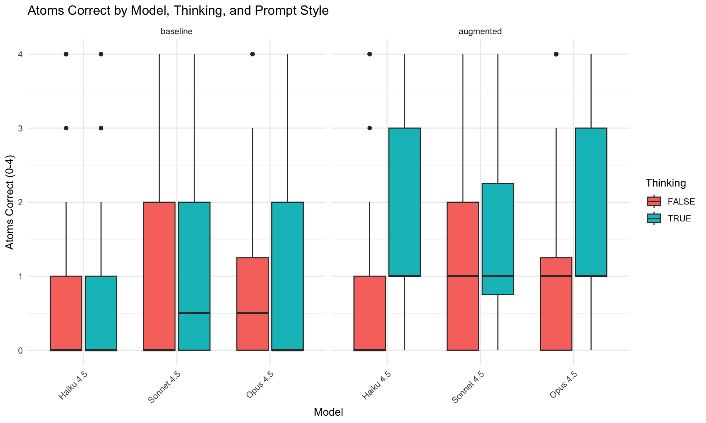
Code
# Score distribution
p2 <- ggplot(play_data, aes(x = model_name, y = score, fill = enable_thinking)) +
geom_boxplot() +
facet_wrap(~prompt_style) +
labs(title = "Score by Model, Thinking, and Prompt Style",
x = "Model", y = "Score (lower is better)", fill = "Thinking") +
theme(axis.text.x = element_text(angle = 45, hjust = 1))
print(p2)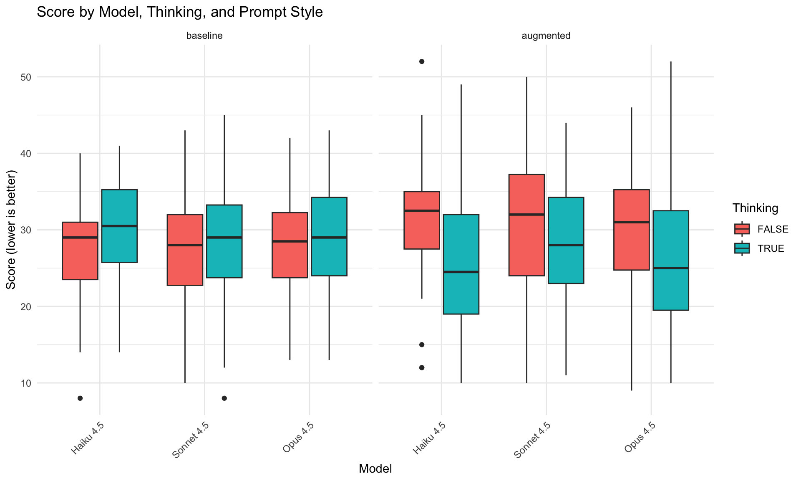
Code
# Mean atoms per ray relationship with performance
p3 <- ggplot(play_data, aes(x = mean_atoms_per_ray, y = atoms_correct, color = model_name)) +
geom_point(alpha = 0.5) +
geom_smooth(method = "lm", se = FALSE) +
labs(title = "Performance vs Ray Complexity",
x = "Mean Atoms Affecting Each Ray", y = "Atoms Correct",
color = "Model") +
theme_minimal()
print(p3)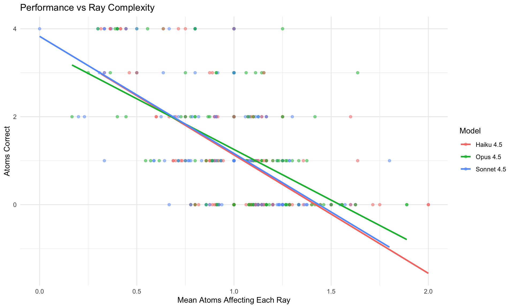
Code
# Interaction plot: Prompt Style × Thinking
p4 <- ggplot(play_data, aes(x = prompt_style, y = atoms_correct,
color = enable_thinking, group = enable_thinking)) +
stat_summary(fun = mean, geom = "point", size = 3) +
stat_summary(fun = mean, geom = "line", linewidth = 1) +
stat_summary(fun.data = mean_se, geom = "errorbar", width = 0.1) +
labs(title = "Prompt Style × Thinking Interaction",
x = "Prompt Style", y = "Atoms Correct (mean ± SE)",
color = "Thinking") +
theme_minimal()
print(p4)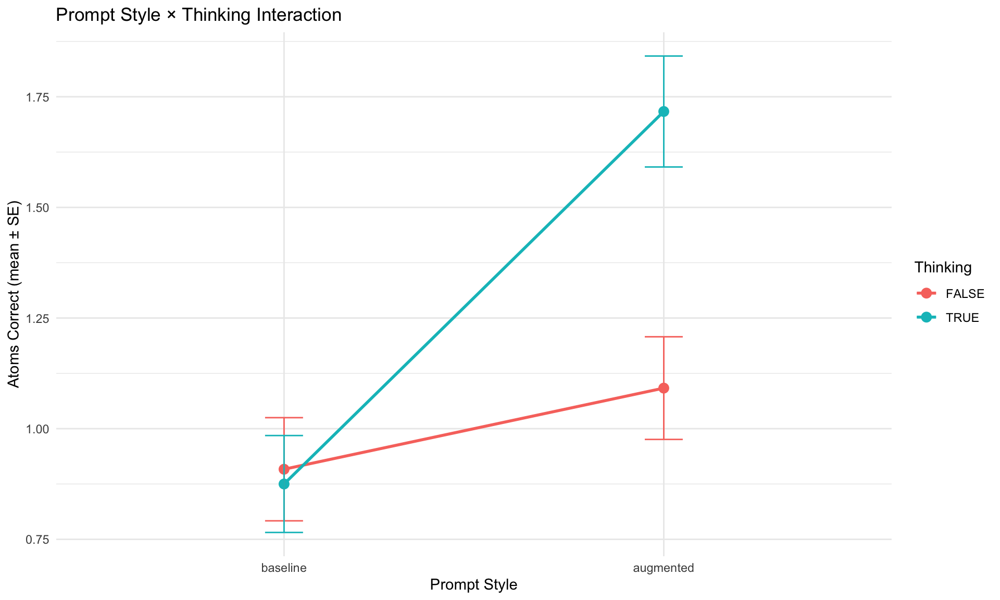
4.3 Error Analysis
Code
# Placeholder for error taxonomy
# Will categorize errors from extended thinking traces
# error_categories <- c(
# "Constraint tracking failure",
# "Spatial reasoning error",
# "Non-parsimonious hypothesis",
# "Failure to update on evidence",
# "Experiment design inefficiency"
# )[Error analysis to be added after data collection]
5 Discussion
5.1 Summary of Findings
[To be completed after data collection]
5.2 Relation to Literature
5.2.1 Constraint Satisfaction
[Discuss how results relate to ZebraLogic, GenCP findings]
5.2.2 Spatial Reasoning
[Discuss how results relate to PLUGH, spatial reasoning benchmarks]
5.2.3 World Models
[Discuss how results relate to pulley system, text world simulator findings]
5.2.4 Abductive Reasoning
[Discuss how results relate to Occam’s Razor, hypothesis generation findings]
5.3 Implications
5.3.1 For LLM Deployment in Diagnostic Domains
[Discuss implications for medical diagnosis, fault detection, and other diagnostic tasks]
5.3.2 For LLM-Modulo Architectures
[Discuss whether tool augmentation addresses the limitations]
5.3.3 For Benchmark Development
[Discuss Black Box as a diagnostic tool for reasoning assessment]
5.4 Limitations
- Single game domain: Results may not generalize to all reasoning tasks
- Prompt sensitivity: Different prompt formulations might yield different results
- Model versions: Rapid model updates may change performance characteristics
- Sample size: [Discuss statistical power]
5.5 Future Directions
- Extended model comparison: GPT-4, Gemini, open-source models
- Tool augmentation study: Provide ray-tracing verification tool
- Difficulty manipulation: Vary grid size, atom count, atom arrangement
- Human baseline: Compare LLM performance to human players
- Fine-tuning study: Following the approach of Y. Wang et al. (2025), who demonstrated substantial reasoning improvements through game-specific training on Doudizhu and Go, test whether task-specific training on Black Box traces improves performance. Of particular interest is whether such training would generalize to novel atom configurations (in-distribution transfer) and to other spatial reasoning tasks (out-of-distribution transfer), or whether improvements would be limited to memorized patterns—the “catastrophic forgetting” phenomenon observed in their work when game training interfered with unrelated reasoning tasks
6 Conclusion
[To be completed after data collection]
7 References
Authors, Various. 2025a. “Auto-Bench: An Automated Benchmark for Scientific Discovery in LLMs.” arXiv Preprint arXiv:2502.15224. https://arxiv.org/abs/2502.15224.
———. 2025b. “PuzzlePlex: A Benchmark to Evaluate the Reasoning and Planning of Large Language Models on Puzzles.” In International Conference on Learning Representations (ICLR).
Bonlarron, Alexandre, Jean-Charles Régin, and Elisabetta De Maria. 2024. “Combining Constraint Programming Reasoning with Large Language Model Predictions.” In Proceedings of the 30th International Conference on Principles and Practice of Constraint Programming (CP 2024), 307:25. LIPIcs. Schloss Dagstuhl. https://doi.org/10.4230/LIPIcs.CP.2024.25.
Bos, Nathan. 2024. “Language Models and Spatial Reasoning: What’s Good, What Is Still Terrible, and What Is Improving.” Towards Data Science. https://medium.com/data-science/language-models-and-spatial-reasoning.
Chen, Fangru et al. 2024. “An Empirical Analysis on Spatial Reasoning Capabilities of Large Multimodal Models,” 1195.
Freuder, Eugene C. 2024. “Conversational Modeling for Constraint Satisfaction.” Proceedings of the AAAI Conference on Artificial Intelligence 38 (20): 22592–97. https://doi.org/10.1609/aaai.v38i20.30225.
Giadikiaroglou, Panagiotis, Maria Lymperaiou, Giorgos Filandrianos, and Giorgos Stamou. 2024. “Puzzle Solving Using Reasoning of Large Language Models: A Survey.” arXiv Preprint arXiv:2402.11291. https://arxiv.org/abs/2402.11291.
Gui, Jiayi, Yiming Liu, Jiale Cheng, Xiaotao Gu, Xiao Liu, Hongning Wang, Yuxiao Dong, Jie Tang, and Minlie Huang. 2024. “LogicGame: Benchmarking Rule-Based Reasoning Abilities of Large Language Models.” arXiv Preprint arXiv:2408.15778. https://arxiv.org/abs/2408.15778.
Harig, Tobin et al. 2025. “LLM World Models Are Mental: Output Layer Evidence of Brittle World Model Use in LLM Mechanical Reasoning.” arXiv Preprint arXiv:2507.15521.
Kambhampati, Subbarao et al. 2024. “LLMs Can’t Plan, but Can Help Planning in LLM-Modulo Frameworks.” arXiv Preprint arXiv:2402.01817.
Lin, Bill Yuchen et al. 2024. “ZebraLogic: Benchmarking the Logical Reasoning Ability of Language Models.” Hugging Face Blog. https://huggingface.co/blog/yuchenlin/zebra-logic.
Liu, Emmy, Graham Neubig, and Jacob Andreas. 2024. “An Incomplete Loop: Deductive, Inductive, and Abductive Learning in Large Language Models.” arXiv Preprint arXiv:2404.03028.
Michailidis, Kostis, Dimosthenis Tsouros, and Tias Guns. 2024. “Constraint Modelling with LLMs Using in-Context Learning.” In Proceedings of the 30th International Conference on Principles and Practice of Constraint Programming (CP 2024), 307:20. LIPIcs. Schloss Dagstuhl. https://doi.org/10.4230/LIPIcs.CP.2024.20.
Omar, Mahmud, Reem Agbareia, Alon Gorenshtein, Alexander W Charney, Benjamin S Glicksberg, Girish N Nadkarni, and Eyal Klang. 2025. “Large Language Models Chase Zebras: Salient Cues Overrule Base Rates in Clinical Diagnosis.” SSRN Preprint.
Paglieri, Davide, Bartłomiej Cupiał, Samuel Coward, Ulyana Piterbarg, Maciej Wolczyk, Akbir Khan, Eduardo Pignatelli, et al. 2024. “BALROG: Benchmarking Agentic LLM and VLM Reasoning on Games.” arXiv Preprint arXiv:2411.13543. https://arxiv.org/abs/2411.13543.
Quan, Yida et al. 2025. “Benchmarking Spatiotemporal Reasoning in LLMs and Reasoning Models: Capabilities and Challenges.” arXiv Preprint arXiv:2505.11618.
Rodriguez, Pablo et al. 2025. “Analogical Mappings of Facts and Counterfactuals in the Human Mind and Peirce’s Abduction: Limitations in LLMs.” Cognitive Systems Research. https://doi.org/10.1016/j.cogsys.2025.101389.
Shojaee, Parshin, Iman Mirzadeh, Keivan Alizadeh, Maxwell Horton, Samy Bengio, and Mehrdad Farajtabar. 2025. “The Illusion of Thinking: Understanding the Strengths and Limitations of Reasoning Models via the Lens of Problem Complexity.” arXiv Preprint arXiv:2506.06941.
Tikhonov, Alexey et al. 2024. “PLUGH: A Benchmark for Spatial Understanding and Reasoning in Large Language Models.” In arXiv Preprint. https://arxiv.org/abs/2408.04648.
Valmeekam, Karthik, Matthew Marquez, Alberto Olmo, Sarath Sreedharan, and Subbarao Kambhampati. 2023. “On the Planning Abilities of Large Language Models: A Critical Investigation.” Advances in Neural Information Processing Systems 36.
Wang, Jixuan et al. 2025. “CrossWordBench: Evaluating the Reasoning Capabilities of LLMs and LVLMs with Controllable Puzzle Generation.” arXiv Preprint arXiv:2510.13271. https://arxiv.org/abs/2510.13271.
Wang, Ruoyao, Graham Todd, Xingdi Yuan, et al. 2024. “Can Language Models Serve as Text-Based World Simulators?” In Proceedings of the 62nd Annual Meeting of the Association for Computational Linguistics.
Wang, Yifan, Xinnan Li, Yifei Niu, Shimin Hu, et al. 2025. “Empowering LLMs in Decision Games Through Algorithmic Data Synthesis.” arXiv Preprint arXiv:2503.13980. https://arxiv.org/abs/2503.13980.
Wang, Zonglin et al. 2025. “Language Models Do Not Follow Occam’s Razor: A Benchmark for Inductive and Abductive Reasoning.” arXiv Preprint arXiv:2509.03345.
Wen, Andrew, Qiuhao Lu, Yu-Neng Chuang, et al. 2025. “Context Matching Is Not Reasoning When Performing Generalized Clinical Evaluation of Generative Language Models.” Npj Digital Medicine. https://doi.org/10.1038/s41746-025-02253-2.
Wikipedia contributors. 2024. “Black Box (Game).” https://en.wikipedia.org/wiki/Black_Box_(game).
Yang, Yunfan et al. 2025. “From Reasoning to Learning: A Survey on Hypothesis Discovery and Rule Learning with Large Language Models.” arXiv Preprint arXiv:2505.21935.
8 Appendix A: Prompt Texts
8.1 Baseline Play Prompt
You are playing Black Box, a game of hide and seek played on an 8 by 8 grid.
Your opponent has hidden 4 balls within this box. By shooting rays into the
box and observing where they emerge, it is possible to deduce the positions
of the hidden balls.
GRID: 8x8, rows 1-8 (top to bottom), columns 1-8 (left to right).
RAYS: Fire from edge positions - NORTH/SOUTH use columns 1-8, EAST/WEST use rows 1-8.
There are three possible outcomes for each ray you send into the box:
DETOUR: The ray is deflected and emerges somewhere other than where you sent
it in. Detours are denoted by matching pairs of numbers.
REFLECTION (R): The ray is reflected and emerges in the same place it was sent in.
HIT (H): The ray strikes a ball directly and is absorbed.
[ASCII diagram examples showing deflection, reflection, and hit patterns...]
SCORING:
Your goal is to minimize your score. Lower is better.
- Each ray entry point costs 1 point
- Each ray exit point costs 1 point (detours cost 2 total, reflections cost 1)
- Each missed atom costs 5 points
RULES:
- You cannot fire from positions already used as entry or exit points.
- Maximum 20 rays.
Respond with JSON only:
{"action": "fire", "side": "north|south|east|west", "position": 1-8, "reasoning": "..."}
{"action": "guess", "atoms": [[row,col], [row,col], [row,col], [row,col]], "reasoning": "..."}8.2 Baseline Predict Prompt
Predict where a ray will exit in Black Box.
GRID: 8x8, rows 1-8 (top to bottom), columns 1-8 (left to right).
EDGES: NORTH/SOUTH use columns 1-8, EAST/WEST use rows 1-8.
As a ray approaches a ball it is deflected ninety degrees. Rays can be
deflected multiple times.
[ASCII diagram examples showing deflection, reflection, and hit patterns...]
Respond with JSON only:
{"exit_side": "north|south|east|west", "exit_position": 1-8, "reasoning": "..."}
OR for absorption: {"absorbed": true, "reasoning": "..."}
OR for reflection: {"reflected": true, "reasoning": "..."}8.3 Augmented Prompt
[Full augmented prompt text to be included]
8.4 Hypothesis-Enabled Play Prompt Extension
When hypotheses are enabled, the response format is extended:
Respond with JSON only:
{"action": "fire", "side": "north|south|east|west", "position": 1-8, "reasoning": "..."}
{"action": "mark", "row": 1-8, "col": 1-8, "reasoning": "..."} - mark suspected atom
{"action": "unmark", "row": 1-8, "col": 1-8, "reasoning": "..."} - remove marked position
{"action": "check", "reasoning": "..."} - submit answer (requires exactly 4 marked positions)9 Appendix B: Sample Game Traces
[Representative game traces showing LLM reasoning]
10 Appendix C: Error Taxonomy
[Detailed coding scheme for error analysis]